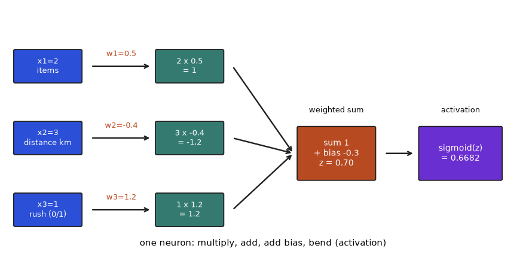
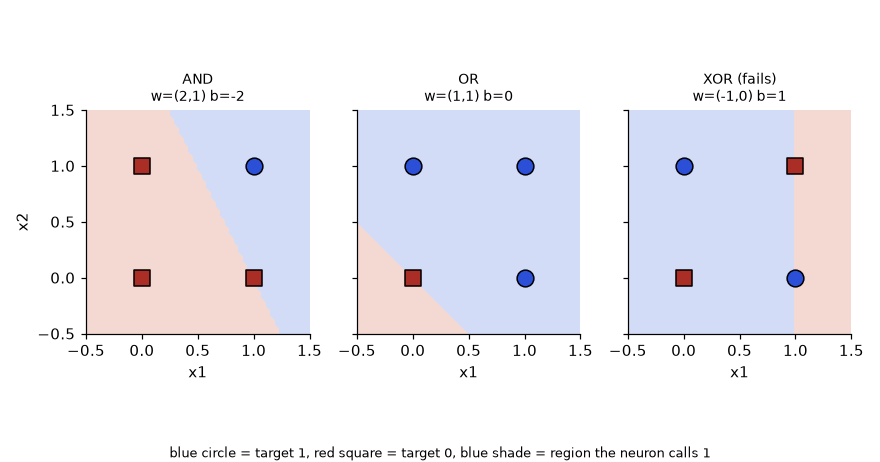
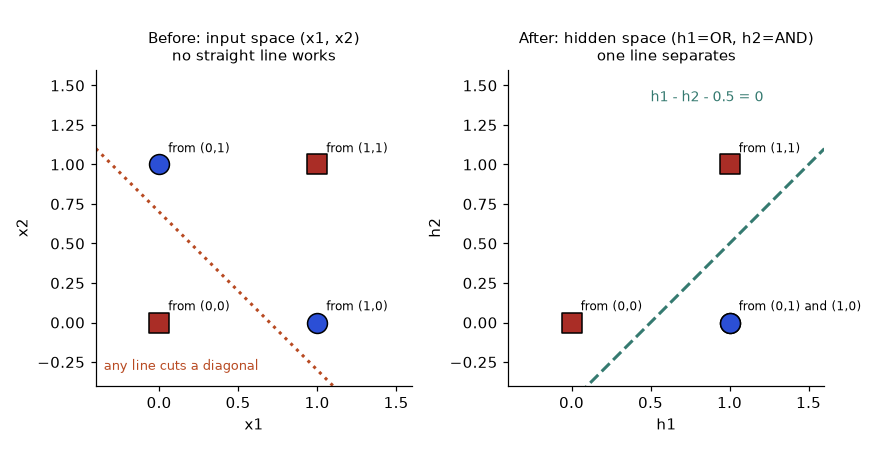
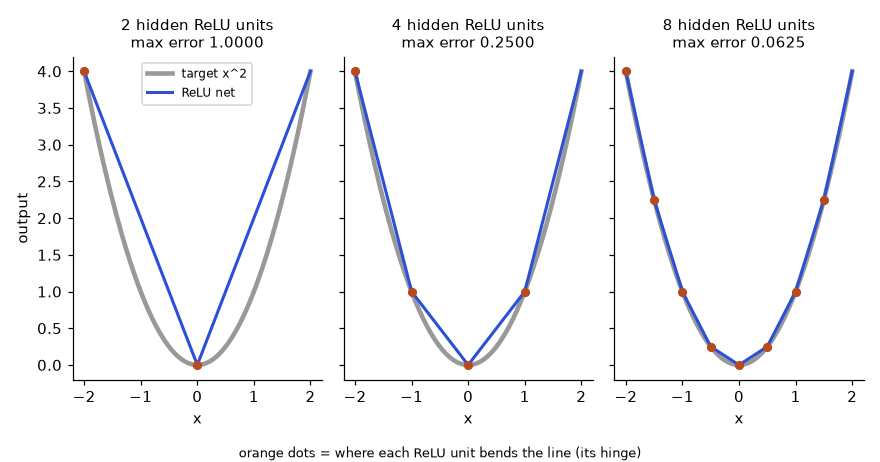
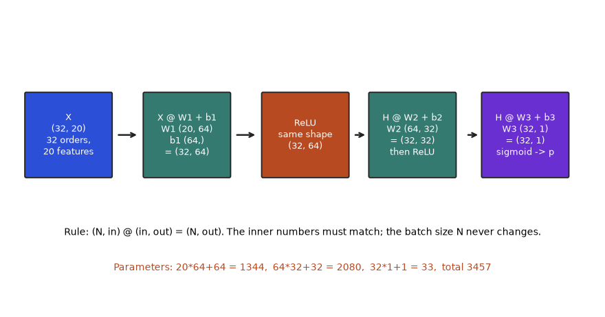
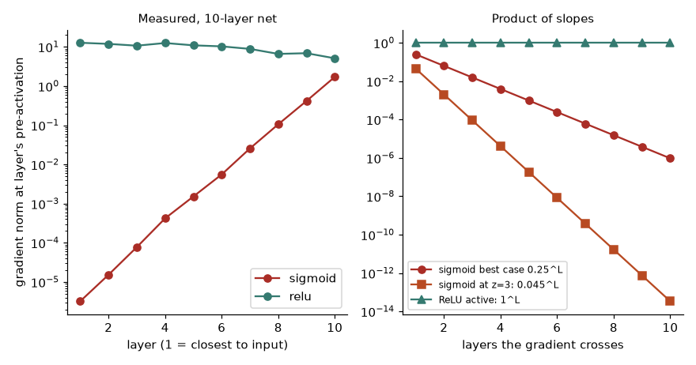
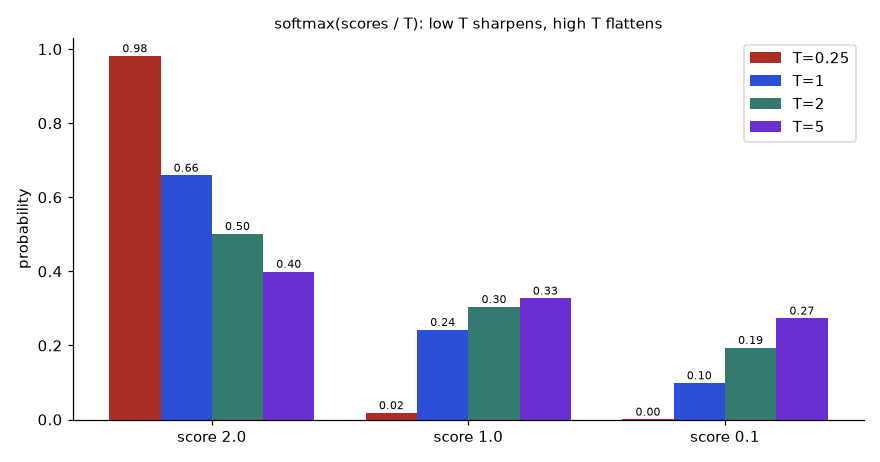
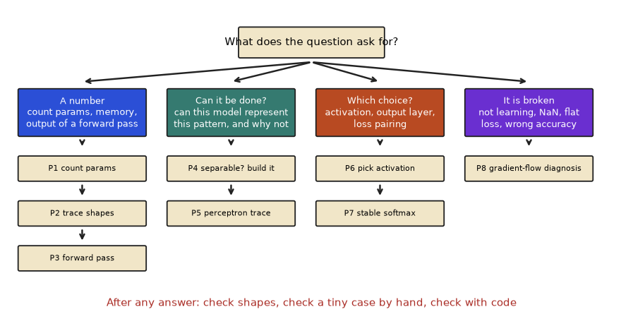

In this chapter
- 1.1 The Perceptron: One Artificial Neuron
- 1.2 From One Neuron to a Multi-Layer Perceptron (MLP)
- 1.3 Activation Functions and Why Each One Exists
- 1.4 Start From Zero: Words, a Neuron on Paper, and Batches
- 1.5 The Perceptron Up Close: the Boundary, the Distance and the Training Trace
- 1.6 Hidden Layers in Practice: Building Functions, Tracing Shapes, Counting Memory
- 1.7 Activations Under the Microscope: Slopes, Dead Neurons, Temperature and Stable Losses
- 1.8 How to Solve Any "From Linear Models to a Neural Network" Problem
- 1.9 Going Deeper: Expert Notes, Edge Cases and What Interviewers Probe
- 1.10 Mixed Drill, Self-Test and Where to Go Next
- Chapter recap
- Practice set
- Prompt pack
Companies use neural networks to read invoices, spot defects on a factory line, rank search results and power chat assistants. Before you can use or debug any of these, you need to see that a neural network is not magic. You already know linear regression and logistic regression. A neural network is many of these small linear models stacked together, with a bend (a non-linearity, a step that is not a straight line) put between them. By the end of this chapter you will be able to count the parameters of a network, run its forward pass by hand, explain why XOR needs a hidden layer, and choose an activation function for each part of a network. We use real numbers you can check on paper.
1.1 The Perceptron: One Artificial Neuron
Words you need
| Word | Plain meaning |
|---|---|
| Input (x) | A number the model is given (a pixel, a price, a response time) |
| Weight (w) | A number that says how important one input is |
| Bias (b) | A constant added to the sum; it shifts the limit |
| Activation | The final rule applied to the sum |
| Epoch | One full pass over all training examples |
Real-world mapping
| Part | Example value | Where it appears in the job |
|---|---|---|
| Inputs | (age=30, income=5) for a loan | Features in a credit-scoring model |
| Weights | (0.2, 0.7) | The learned numbers saved in a model file |
| Bias | -1.5 | The bias field you see in every layer summary |
| Output | 1 = approve | A class label or a probability |
How it works
A perceptron takes inputs x₁, x₂, ..., xₙ. It computes a weighted sum plus a bias, and then applies a rule.
z = w₁·x₁ + w₂·x₂ + ... + wₙ·xₙ + b (the "pre-activation")
output = 1 if z > 0 else 0 (the "step activation")- Weight (w): how strongly one input pushes the answer.
- Bias (b): a constant shift. It moves the decision limit without needing any input.
- Activation function: the rule applied to
zto produce the output.
The perceptron learning rule (Rosenblatt, 1958) is simple. For each training example, compute the prediction p. Let d = target − p. Then update w ← w + d·x and b ← b + d. If the prediction is right, d = 0 and nothing changes.
Problem 1.1.1 Train a perceptron for the AND gate by hand. Inputs (0,0),(0,1),(1,0),(1,1), targets 0,0,0,1. Start with w = (0,0), b = 0. Go through the examples in order, one epoch.
| Step 1 | Example (0,0), target 0. z = 0, not greater than 0, so p = 0. d = 0. No change. |
|---|---|
| Step 2 | Example (0,1), target 0. z = 0, p = 0. No change. |
| Step 3 | Example (1,0), target 0. z = 0, p = 0. No change. |
| Step 4 | Example (1,1), target 1. z = 0, p = 0. d = 1. Update w = (0,0) + 1·(1,1) = (1,1), b = 0 + 1 = 1. |
| Step 5 | The second epoch continues from w = (1,1), b = 1. Now (0,0) gives z = 1 > 0, so p = 1 but the target is 0. The rule corrects it again. Doing this by code is faster. |
| Answer | After several epochs the rule settles on weights that work. The code below shows the final weights. |
| Check | We verify the final weights on all four inputs right after the code output. |
| Why it matters | This is the oldest learning algorithm in AI. Every modern network still "changes weights when it is wrong", only with a smoother rule. |
Before you run it, predict: will XOR reach zero mistakes? (Hint: look at the picture in 1.1.2.)
import numpy as np
X = np.array([[0,0],[0,1],[1,0],[1,1]])
def train(y, epochs=10):
w = np.zeros(2); b = 0.0
for ep in range(epochs):
err = 0
for x, t in zip(X, y):
p = 1 if w @ x + b > 0 else 0
d = t - p
if d:
w = w + d * x; b += d; err += 1
if err == 0:
return w, b, ep
return w, b, None
for name, y in [("AND",[0,0,0,1]), ("OR",[0,1,1,1]), ("XOR",[0,1,1,0])]:
print(name, train(np.array(y)))AND (array([2., 1.]), np.float64(-2.0), 5)
OR (array([1., 1.]), np.float64(0.0), 3)
XOR (array([-1., 0.]), np.float64(1.0), None)Line by line: p = 1 if w @ x + b > 0 else 0 is the perceptron rule. d = t - p is the error: +1 means we said 0 but should say 1, so we push w toward x. if d: skips the update when we are right. err == 0 means a clean pass, so we stop.
The last number is the epoch where there were zero mistakes. AND was solved after epoch 5 (the sixth pass was clean). OR after epoch 3. XOR never reached zero mistakes; None means it kept failing for all 10 epochs.
Check AND with the final weights w = (2,1), b = −2: input (1,1) gives 2+1−2 = 1 > 0, output 1. Input (1,0) gives 2−2 = 0, not greater than 0, output 0. Input (0,1) gives 1−2 = −1, output 0. Correct.
Problem 1.1.2 Why can no single perceptron solve XOR? Use the picture.
| Step 1 | A perceptron decides with w·x + b > 0. In 2D that is a straight line. One side is class 1, the other is class 0. |
|---|---|
| Step 2 | XOR needs (0,1) and (1,0) as class 1, and (0,0) and (1,1) as class 0. |
| Step 3 | Draw the four points at the corners of a square. The two class-1 points sit on one diagonal, the two class-0 points on the other diagonal. |
| Step 4 | No straight line can separate two diagonals. Any line that puts (0,1) and (1,0) on one side must also catch (0,0) or (1,1). |
| Answer | XOR is not linearly separable, so a single perceptron (or any linear model) cannot solve it. This was the famous 1969 criticism of perceptrons (Minsky and Papert). |
| Check | The code above confirms it: XOR printed None (never reached zero mistakes). |
| Why it matters | In plain words: if the pattern you need is "A or B but not both", a straight-line model will always be wrong somewhere. Real data is full of such interactions. |
The picture

Read it like this: the horizontal axis is x₁, the vertical axis is x₂. The four corners are the four inputs. The two blue circles are on one diagonal, the two red squares on the other. The dashed line is one try at a straight divider, and it must cut a diagonal.
x₂
1 | 1(0,1) 0(1,1)
|
0 | 0(0,0) 1(1,0)
+------------------------ x₁
0 1
Class 1 = diagonal pair. No single line separates them.Connection to the real job
A perceptron with a sigmoid instead of a step is exactly logistic regression. Every neuron in every large model today is this same formula: a dot product, a bias, and an activation. When you read a model summary and see "parameters: 7 million", those are mostly weights w and biases b.
Applications
- Early handwriting and spam filters (single-layer linear classifiers).
- The last layer of almost every classifier network is one set of perceptron-like units.
- Linear probes: testing what a big pretrained model "knows" using one linear layer.
b the decision line must pass through the origin. Always keep it unless a method says otherwise.Check yourself
- In
z = w·x + b, what does a larger bias do to the chance of output 1? Answer: it makes it larger; the neuron fires more easily. - What does the perceptron rule do when the prediction is right? Answer: nothing, because
d = 0. - Is OR linearly separable? Answer: yes; the code found weights
(1,1)and bias0.
1.2 From One Neuron to a Multi-Layer Perceptron (MLP)
How it works
An MLP (multi-layer perceptron, also called a fully connected network or dense network) has:
- an input layer (just the numbers; no computation),
- one or more hidden layers (each neuron does
activation(w·x + b)), - an output layer.
In matrix form, one layer is h = f(W x + b). If the layer has 4 neurons and the input has 3 numbers, W has shape 4 × 3, b has 4 numbers, and the parameter count is 4·3 + 4 = 16.
Parameters are the numbers the training process learns (all W and b). Hyperparameters are the choices we make before training (layer sizes, learning rate).
Real-world mapping
| Part | Example value | Where it appears in the job |
|---|---|---|
| Hidden layer size | 64 neurons | A setting you choose when building the model |
W shape | 4 × 3 | Shape errors are the number one bug when you code networks |
| Parameter count | 16 | Printed by model.summary(); links to memory and speed |
| Depth | 12 layers | "Deep" in "deep learning" |
Problem 1.2.1 Solve XOR with two hidden neurons using weights chosen by hand. Use the step activation.
| Step 1 | Hidden neuron A should compute OR: w = (1,1), b = −0.5. Hidden neuron B should compute AND: w = (1,1), b = −1.5. |
|---|---|
| Step 2 | XOR is "OR but not AND". So the output neuron uses w = (1, −1), b = −0.5. |
| Step 3 | Test input (1,1): A: 2−0.5 = 1.5 > 0 gives 1. B: 2−1.5 = 0.5 > 0 gives 1. Output: 1·1 + (−1)·1 − 0.5 = −0.5, not greater than 0, so 0. Correct, XOR(1,1) = 0. |
| Step 4 | Test input (0,1): A: 1−0.5 = 0.5 gives 1. B: 1−1.5 = −0.5 gives 0. Output: 1 − 0 − 0.5 = 0.5 > 0, so 1. Correct. |
| Answer | Two hidden neurons are enough. Code check: |
import numpy as np
X = np.array([[0,0],[0,1],[1,0],[1,1]])
W1 = np.array([[1,1],[1,1]]); b1 = np.array([-0.5,-1.5])
W2 = np.array([1,-1]); b2 = -0.5
step = lambda z: (z > 0).astype(int)
H = step(X @ W1 + b1)
print(H)
print(step(H @ W2 + b2))[[0 0]
[1 0]
[1 0]
[1 1]]
[0 1 1 0]Before you run it, predict: what will H look like for input (1,1)?
The hidden layer printed H is a new representation of the four inputs. In that new space, (0,1) and (1,0) both became (1,0), and the problem turned linearly separable. This is the whole point of hidden layers: they change the coordinates until the problem becomes easy.
- Check All four outputs
[0 1 1 0]match the XOR truth table. - Interpretation Two tiny "questions" (is at least one input on? are both on?) plus a rule that combines them solved a problem that one neuron could not.
Problem 1.2.2 Count parameters of a realistic network: 20 input features (request size, thread count, ...), hidden layers of 64 and 32 neurons, 1 output.
| Formula | layer parameters = inputs × outputs + outputs |
|---|---|
| Plug in | 20·64+64, 64·32+32, 32·1+1 |
| Compute | 1280+64 = 1344, 2048+32 = 2080, 32+1 = 33 |
| Answer | Total 1344 + 2080 + 33 = 3457 parameters. |
| Check | Sum of weights 1280+2048+32 = 3360 plus biases 64+32+1 = 97 gives 3457. |
| Why it matters | Each parameter is one float (4 bytes), so this model is about 14 KB. A model with 7 billion parameters is about 28 GB in float32. Counting parameters tells you memory. |
Problem 1.2.3 Show that stacking linear layers without an activation gives nothing new.
| Step 1 | Layer 1: h = A x, with A of shape 2×3. Layer 2: y = B h, with B of shape 4×2. |
|---|---|
| Step 2 | Then y = B (A x) = (B A) x. The product BA is one 4×3 matrix. |
| Step 3 | Check with random matrices in code. |
import numpy as np
rng = np.random.default_rng(0)
A = rng.normal(size=(2,3)); B = rng.normal(size=(4,2)); x = rng.normal(size=3)
print(np.allclose(B @ (A @ x), (B @ A) @ x), (B @ A).shape)True (4, 3)- Answer Two linear layers equal one linear layer of shape
4×3. - Check
np.allcloseprintedTrue. - Interpretation Without non-linear activations, a 100-layer network is as weak as a single layer. The activation is what gives depth its power.
The picture

This small network (2 inputs, 2 hidden neurons, 1 output) is the one we will push numbers through in Chapter 2. Each circle is a neuron and each arrow is a weight. Data flows left to right.
A second sketch, for a different network, to practise counting parameters: 3 inputs, 4 hidden neurons and 2 outputs.
input (3) hidden (4) output (2)
x1 ──┐ ┌─ h1 ─┐
x2 ──┼─────▶├─ h2 ─┼───────▶ y1
x3 ──┘ ├─ h3 ─┤ y2
└─ h4 ─┘
Every arrow = one weight. Params: 4·3+4 = 16, then 2·4+2 = 10. Total 26.Connection to the real job
- Tabular models: an MLP on customer features is a common baseline (often beaten by gradient boosting, which you know from the ML document).
- Every transformer block contains an MLP (the "feed-forward network", Chapter 11). In big language models, those MLPs hold most of the parameters.
- The Universal Approximation Theorem says a network with one hidden layer and enough neurons can approximate any smooth function. It tells you a network can represent something, not that training will find it.
Applications
- Credit scoring, churn, and click-through prediction (as part of bigger models).
- Embedding towers in recommendation systems.
- The "head" on top of image and text models.
Check yourself
- How many parameters in a dense layer from 10 inputs to 5 outputs? Answer:
10·5 + 5 = 55. - Why did XOR become solvable in 1.2.1? Answer: the hidden layer remapped the points so a line can separate them.
- What does "universal approximation" not promise? Answer: that gradient descent will find the right weights, or that the network will be small.
1.3 Activation Functions and Why Each One Exists
The activations
Let z be the pre-activation. Here is each function and why people use it.
| Name | Formula | Range | Why it exists | Weakness |
|---|---|---|---|---|
| Step | 1 if z>0 else 0 | {0,1} | The original; a hard yes/no | Gradient is 0 everywhere, so it cannot be trained |
| Sigmoid | 1/(1+e^(−z)) | (0,1) | Smooth probability; output for binary classes | Saturates (gradient → 0) for large |z| |
| tanh | (e^z − e^(−z))/(e^z + e^(−z)) | (−1,1) | Zero-centered sigmoid; used inside LSTMs | Also saturates |
| ReLU | max(0, z) | [0,∞) | Very cheap; gradient is 1 for z>0, so deep nets train | "Dead" neurons when z<0 always |
| GELU | z·Φ(z) (Φ = normal CDF) | ≈(−0.17,∞) | Smooth ReLU; standard in BERT/GPT-style transformers | Slightly costlier |
| SiLU/Swish | z·sigmoid(z) | ≈(−0.28,∞) | Smooth, non-monotone; used in EfficientNet, modern LLM MLPs (SwiGLU) | Slightly costlier |
| Softmax | e^(zᵢ)/Σⱼ e^(zⱼ) | (0,1), sums to 1 | Turns a score vector into class probabilities | Overflows if not stabilized |
The usual GELU is computed with this tanh approximation: 0.5·z·(1 + tanh(√(2/π)·(z + 0.044715·z³))). Libraries have an exact version too; the two are very close.
import numpy as np
np.set_printoptions(precision=4, suppress=True)
z = np.array([-3,-1,0,1,3.])
sig = lambda z: 1/(1+np.exp(-z))
relu = lambda z: np.maximum(0,z)
gelu = lambda z: 0.5*z*(1+np.tanh(np.sqrt(2/np.pi)*(z+0.044715*z**3)))
silu = lambda z: z*sig(z)
print("z ",z);print("relu",relu(z));print("sig ",sig(z))
print("tanh",np.tanh(z));print("gelu",gelu(z));print("silu",silu(z))
print("sig'",sig(z)*(1-sig(z)))z [-3. -1. 0. 1. 3.]
relu [0. 0. 0. 1. 3.]
sig [0.0474 0.2689 0.5 0.7311 0.9526]
tanh [-0.9951 -0.7616 0. 0.7616 0.9951]
gelu [-0.0036 -0.1588 0. 0.8412 2.9964]
silu [-0.1423 -0.2689 0. 0.7311 2.8577]
sig' [0.0452 0.1966 0.25 0.1966 0.0452]Real-world mapping
| Activation | Example value | Where it appears in the job |
|---|---|---|
| ReLU | max(0, -3) = 0 | Hidden layers of CNNs and plain MLPs |
| GELU | gelu(1) = 0.8412 | Every layer of BERT/GPT-style transformers |
| Sigmoid | sigmoid(0) = 0.5 | Output of a "fraud or not" model |
| Softmax | (0.659, 0.242, 0.099) | Output of a 3-class classifier |

How to read it: the horizontal axis is the input z, the vertical axis is what the function returns. Sigmoid (flat at both ends) and tanh are S-shaped, so far from zero their curves are flat, meaning slope near zero. ReLU is flat at 0 on the left and a straight 45-degree line on the right. GELU and SiLU look like ReLU with the corner rounded and a tiny dip below zero.
Before you run the next code, predict: which activation will output exactly 0.0 for z = -3?
Problem 1.3.1 The sigmoid slope is σ(z)(1 − σ(z)). Use the table to explain "vanishing gradient". Suppose 10 sigmoid layers are stacked and each passes the best case slope.
| Step 1 | At z = 0 the slope is 0.5 × 0.5 = 0.25. That is the maximum possible slope. |
|---|---|
| Step 2 | By the chain rule (Math PDF, Pillar 2.7), the gradient through 10 layers multiplies 10 slopes: at best 0.25¹⁰. |
| Step 3 | 0.25¹⁰ = 9.5 × 10⁻⁷, about one in a million. |
| Step 4 | At z = 3 each slope is only 0.045, so 0.045¹⁰ ≈ 3.4 × 10⁻¹⁴. |
| Answer | The signal reaching the first layers is almost zero, so those layers barely learn. This is why ReLU (slope 1 for positive z) replaced sigmoid in hidden layers. |
| Check | 0.25**10 in Python is 9.5367e-07, and 0.045**10 is about 3.4e-14. |
| Interpretation | Imagine passing a message down a line of 10 people who each whisper only a quarter as loud. The last person hears nothing. |
Problem 1.3.2 Compute softmax for scores (2.0, 1.0, 0.1), then show why we subtract the maximum.
| Step 1 | Exponentials: e² = 7.3891, e¹ = 2.7183, e^0.1 = 1.1052. Sum = 11.2126. |
|---|---|
| Step 2 | Probabilities: 7.3891/11.2126 = 0.659, 2.7183/11.2126 = 0.2424, 1.1052/11.2126 = 0.0986. They sum to 1. |
| Step 3 | Now try scores (1002, 1001, 1000). e^1002 is larger than a 64-bit float can hold, so it becomes inf, and inf/inf is not a number. |
| Step 4 | Softmax does not change if we subtract the same constant from all scores. Subtract the max (1002), giving (0, −1, −2). |
import numpy as np
np.set_printoptions(precision=4, suppress=True)
s = np.array([2.0,1.0,0.1]); e = np.exp(s); print(e, e/e.sum())
s2 = np.array([1002.,1001,1000]); m = np.exp(s2 - s2.max()); print(m/m.sum())
print(np.exp(s2))[7.3891 2.7183 1.1052] [0.659 0.2424 0.0986]
[0.6652 0.2447 0.09 ]
[inf inf inf]- Check The two probability lists each sum to 1, and
0.6652 / 0.2447 = e¹ = 2.718, as the scores differ by 1. - Answer With the max subtracted, softmax is stable and gives
(0.6652, 0.2447, 0.09). The rawnp.expprintedinf(with an overflow warning). Always use the "subtract max" trick, or use a library function liketorch.softmax.
The picture
ReLU Sigmoid GELU / SiLU
/ ___-- ~ smooth ReLU
/ _-- small dip below 0
____/ --Which one to pick (a practical rule)
- Hidden layers of a normal network: ReLU as a default, or GELU/SiLU for modern architectures.
- Binary output: sigmoid. Multi-class output: softmax. Regression output: none (a plain linear output).
- Inside LSTM/GRU gates: sigmoid and tanh (Chapter 10).
- A variant to know: Leaky ReLU
max(0.01z, z)keeps a small slope for negativezto avoid dead neurons.
Connection to the real job
Interviewers ask "why ReLU instead of sigmoid?" and "why softmax needs the max trick". In real code, a very common bug is applying softmax and then a loss that applies softmax again (Chapter 3). Large language models use GELU or SwiGLU (a gated SiLU) in every layer.
Applications
- Softmax: classification heads, and attention weights (Chapter 11).
- Sigmoid: probabilities, gates, multi-label outputs.
- GELU/SiLU: transformers, EfficientNet, diffusion U-Nets.
Check yourself
- Why does ReLU help deep networks train? Answer: its slope is exactly 1 for positive inputs, so gradients do not shrink layer after layer.
- What is the output range of tanh? Answer: between −1 and 1.
- Which activation do you put on a regression output? Answer: none.
1.4 Start From Zero: Words, a Neuron on Paper, and Batches
Sections 1.1 to 1.3 move fast. This section slows down. If any word in the first three sections felt like jargon, read this one first, then go back. Everything here uses the smallest numbers possible. You will build the one idea the whole chapter rests on: a neuron multiplies, adds, and bends.
Glossary: every word in this chapter in plain English
| Word | Plain meaning | Tiny example |
|---|---|---|
| Feature | One measured fact about one example | distance = 3 km |
Input vector x | All features of one example, as a list of numbers | x = (2, 3, 1) |
Weight w | How strongly one input pushes the answer up (positive) or down (negative) | w = (0.5, −0.4, 1.2) |
Bias b | A constant added after the weighted sum; shifts how easily the neuron fires | b = −0.3 |
Dot product w·x | Multiply matching numbers, then add: w₁x₁ + w₂x₂ + ... | 1 − 1.2 + 1.2 = 1 |
Pre-activation z | The number w·x + b before any bending | z = 0.7 |
Activation function f | A fixed bending rule applied to z | ReLU, sigmoid |
| Activation (the value) | The number a neuron outputs: f(z) | 0.668 |
| Neuron / unit | One f(w·x + b) | one circle in a drawing |
| Layer | A group of neurons that all read the same inputs | 64 neurons |
| Hidden layer | A layer that is neither the input nor the output | the 64 and 32 in 20→64→32→1 |
| Dense / fully connected | Every neuron reads every input of its layer | nn.Linear in PyTorch |
Weight matrix W | The weights of a whole layer, one row per neuron | shape (out, in) on paper, often stored (in, out) in code |
| Parameter | Any number training may change (all weights and biases) | 3457 in Problem 1.2.2 |
| Hyperparameter | A choice you make before training | layer sizes, learning rate |
| Forward pass | Computing the output from the input, layer by layer | what model(x) does |
| Batch | Several examples processed together as the rows of one matrix | 32 orders at once |
| Logit | The raw score before sigmoid or softmax | z = 2.0 |
| Saturate | Reach a flat part of a curve where the slope is almost 0 | sigmoid at z = 8 |
| Gradient | The slope that tells training which way to nudge a parameter | 0.25 at most for sigmoid |
| Linearly separable | Two groups that one straight line (or flat plane) can split | AND, OR yes; XOR no |
| Non-linearity | Any step that is not a straight-line rule | ReLU's corner |
| Epoch | One full pass over all training examples | 10 epochs = 10 passes |
One neuron, every number visible
A food-delivery app wants to guess whether an order will be late. For one order it records three features: items 2, distance 3 km and a rush-hour flag 1. Imagine the model has already learned w = (0.5, −0.4, 1.2) and b = −0.3. The numbers are invented to keep the arithmetic easy: items push the late score up a little, distance has a negative weight in this toy, and rush hour pushes it up a lot.

How to read it: follow the arrows left to right. Blue boxes are inputs, the orange labels on the arrows are the weights, green boxes are the products, the orange box is the sum plus bias, and the purple box is the activation. Every neuron in every network, from this toy to a language model, is this picture.
Problem 1.4.1 Compute the output of the neuron in the figure with a sigmoid, then with a step, a ReLU and a tanh.
| Formula | z = w₁x₁ + w₂x₂ + w₃x₃ + b, then output = f(z). |
|---|---|
| Products | 0.5·2 = 1.0, −0.4·3 = −1.2, 1.2·1 = 1.2. |
| Sum plus bias | 1.0 − 1.2 + 1.2 = 1.0, then 1.0 − 0.3 = 0.7. So z = 0.7. |
| Sigmoid | 1/(1 + e^(−0.7)) = 1/(1 + 0.4966) = 0.6682. |
| Step | 0.7 > 0, so output 1. |
| ReLU | max(0, 0.7) = 0.7. |
| tanh | (e^0.7 − e^(−0.7))/(e^0.7 + e^(−0.7)) = 0.6044. |
| Meaning | The same z gives four different outputs. The sigmoid reading is "about 67 percent chance of late". |
import numpy as np
x = np.array([2.0, 3.0, 1.0])
w = np.array([0.5, -0.4, 1.2])
b = -0.3
z = w @ x + b
print("z =", round(z, 4))
print("sigmoid=", round(1 / (1 + np.exp(-z)), 4))
print("step =", int(z > 0))
print("relu =", round(max(0.0, z), 4))
print("tanh =", round(np.tanh(z), 4))z = 0.7
sigmoid= 0.6682
step = 1
relu = 0.7
tanh = 0.6044Line by line:
xholds the three features of one order. Floats (2.0) avoid integer surprises.wholds one weight per feature. The two arrays must have the same length, or the dot product fails.bis a single number, not an array.w @ xis the dot product:1.0 − 1.2 + 1.2. Addingbgivesz = 0.7.- The sigmoid line applies
1/(1+e^(−z))to the one numberz. int(z > 0)turns the True/False of the step rule into 1 or 0.max(0.0, z)is ReLU, andnp.tanhis the built-in tanh.
The output matches the steps table: the sigmoid gives 0.6682 and tanh gives 0.6044.
Problem 1.4.2 What does the bias do? Keep the same x and w and change only b.
| Idea | The bias is added to w·x, which is 1.0 here. Changing b slides z up or down by the same amount. |
|---|---|
| Predict | With b = −3: z = 1.0 − 3 = −2, sigmoid is about 0.12. With b = −1: z = 0, sigmoid is exactly 0.5. With b = 3: z = 4, sigmoid is about 0.98. |
| Meaning | A very negative bias makes the neuron hard to fire (it needs strong evidence). A positive bias makes it eager. The bias is the neuron's default opinion before it looks at any input. |
import numpy as np
x = np.array([2.0, 3.0, 1.0]); w = np.array([0.5, -0.4, 1.2])
sigmoid = lambda z: 1 / (1 + np.exp(-z))
for b in [-3, -1, 0, 1, 3]:
z = round(w @ x + b, 6) + 0.0
print(f"b={b:+d} z={z:+.1f} sigmoid={sigmoid(z):.4f}")b=-3 z=-2.0 sigmoid=0.1192
b=-1 z=+0.0 sigmoid=0.5000
b=+0 z=+1.0 sigmoid=0.7311
b=+1 z=+2.0 sigmoid=0.8808
b=+3 z=+4.0 sigmoid=0.9820Line by line: (1) the lambda names the sigmoid so we can reuse it. (2) The loop tries five biases. (3) Each pass recomputes z from the same inputs and weights. (4) The format {b:+d} prints the sign, {z:+.1f} prints one decimal. The five rows rise smoothly from 0.1192 to 0.9820, matching the prediction.
Problem 1.4.3 A realistic case: score four orders at once. Rows are orders, columns are the three features. Use a sigmoid and call an order "late" if the probability is above 0.5.
| Idea | Stack the four inputs into a matrix X of shape (4, 3). Then X @ w computes all four dot products at once and gives shape (4,). |
|---|---|
| Order 1 | (2,3,1): z = 0.7 (done above). |
| Order 2 | (1,10,0): 0.5 − 4.0 + 0 − 0.3 = −3.8. |
| Order 3 | (5,1,1): 2.5 − 0.4 + 1.2 − 0.3 = 3.0. |
| Order 4 | (0,4,0): 0 − 1.6 + 0 − 0.3 = −1.9. |
| Answer | Probabilities about 0.6682, 0.0219, 0.9526, 0.1301, so labels late, on time, late, on time. |
import numpy as np
X = np.array([[2, 3, 1], [1, 10, 0], [5, 1, 1], [0, 4, 0]], dtype=float)
w = np.array([0.5, -0.4, 1.2]); b = -0.3
z = X @ w + b
p = 1 / (1 + np.exp(-z))
print("z ", np.round(z, 4))
print("p ", np.round(p, 4))
print("late?", (p > 0.5).astype(int))
loop = np.array([w @ row + b for row in X])
print("loop equals matrix:", np.allclose(loop, z))z [ 0.7 -3.8 3. -1.9]
p [0.6682 0.0219 0.9526 0.1301]
late? [1 0 1 0]
loop equals matrix: TrueLine by line: (1) X is (4, 3): four examples, three features. (2) X @ w multiplies a (4,3) matrix by a (3,) vector and returns four numbers. (3) + b adds the single bias to every one (this is called broadcasting). (4) The sigmoid is applied to all four at once. (5) p > 0.5 gives booleans, astype(int) turns them into 0 and 1. (6) The list comprehension recomputes each row the slow way to prove the matrix form gives identical answers.
N) is the first dimension and it flows unchanged through every layer. The model's weights do not depend on N.20 × 64 (inputs by neurons) whether you feed 1 example or 1 million. The batch size changes the size of the data, never the number of parameters.Check yourself
- Compute
zforx = (1, 2),w = (3, −1),b = 1. Answer:3 − 2 + 1 = 2. - If
z = 2, what do step, ReLU and sigmoid return? Answer: 1, 2 and 0.8808. - A
(5, 4)matrix times a(4,)vector has what shape? Answer:(5,).
1.5 The Perceptron Up Close: the Boundary, the Distance and the Training Trace
Section 1.1 said "a perceptron draws a straight line". Now we make that sentence exact, so you can draw the line, measure how far each point is from it, design weights by hand, and predict how training behaves.
The decision boundary, step by step
The neuron says "1" when w₁x₁ + w₂x₂ + b > 0. The points where the sum is exactly 0 form the decision boundary: w₁x₁ + w₂x₂ + b = 0. In two inputs that is a line. In three inputs it is a flat sheet (a plane), and in 1000 inputs a flat sheet with 999 dimensions (a hyperplane). Three facts let you solve nearly every geometry question:
- The vector
wis perpendicular to the boundary and points toward the "1" side. Larger weights tilt the line; they do not move it. - The bias moves the line. The line crosses the
x₁-axis at−b/w₁and thex₂-axis at−b/w₂(when those weights are not zero). - The signed distance of a point from the line is
z / ‖w‖, where‖w‖ = √(w₁² + w₂²)is the length ofw. Positive means the "1" side.
A consequence: multiplying w and b by the same positive number (say 10) leaves the line, and so every step output, unchanged. Only the sizes relative to each other matter for a perceptron.

How to read it: each panel is one run of the training code from Problem 1.1.1. In AND and OR every blue circle (target 1) sits in the blue region and every red square (target 0) in the red region. In the XOR panel the best the rule could do after 10 epochs is a vertical cut that gets the corner pairs wrong, and it keeps flipping between such wrong cuts forever.
Problem 1.5.1 For the trained AND neuron w = (2, 1), b = −2: find where its line crosses the axes, and the signed distance of each of the four corners.
| Boundary | 2x₁ + x₂ − 2 = 0. |
|---|---|
| Axis crossings | Set x₂ = 0: x₁ = 2/2 = 1. Set x₁ = 0: x₂ = 2/1 = 2. The line passes through (1, 0) and (0, 2). |
| Length of w | ‖w‖ = √(4 + 1) = √5 = 2.2361. |
| z at each corner | (0,0): −2, (0,1): −1, (1,0): 0, (1,1): +1. |
| Distances | Divide by 2.2361: −0.8944, −0.4472, 0, +0.4472. |
| Meaning | Corner (1,0) lies exactly on the line. It is called "0" only because the rule uses a strict > 0. The perceptron rule stops at the first weights with no mistakes, not at the weights with the biggest safety gap. |
import numpy as np
w = np.array([2.0, 1.0]); b = -2.0
corners = np.array([[0, 0], [0, 1], [1, 0], [1, 1]], dtype=float)
z = corners @ w + b
dist = z / np.linalg.norm(w)
print("norm of w :", round(np.linalg.norm(w), 4))
print("z :", z)
print("distance :", np.round(dist, 4))
print("outputs :", (z > 0).astype(int))
scaled = corners @ (10 * w) + 10 * b
print("same outputs after scaling by 10:", np.array_equal(scaled > 0, z > 0))norm of w : 2.2361
z : [-2. -1. 0. 1.]
distance : [-0.8944 -0.4472 0. 0.4472]
outputs : [0 0 0 1]
same outputs after scaling by 10: TrueLine by line: (1) corners lists the four inputs as rows. (2) z is the pre-activation for all four at once. (3) np.linalg.norm(w) is the length √5; dividing z by it gives signed distance. (4) The outputs apply the strict rule z > 0, so the corner with z = 0 gets 0. (5) The last two lines multiply the weights and bias by 10 and show the outputs do not change.
Problem 1.5.2 Design, without training, a single neuron for each of: OR, AND, NAND ("not both"), NOR ("neither") and "x₁ AND NOT x₂". Use the step rule.
| Recipe | Choose the weight signs by asking which inputs should push toward 1. Then choose the bias so that the correct sums fall on the right side of 0, with a gap of 0.5 each way. |
|---|---|
| AND | Both inputs help: w = (1, 1). Only (1,1) has sum 2; every other sum is 0 or 1. Put the limit between 1 and 2: b = −1.5. |
| OR | w = (1, 1). Every input except (0,0) has sum at least 1. Put the limit between 0 and 1: b = −0.5. |
| NAND | The mirror image of AND: flip every sign. w = (−1, −1), b = +1.5. Sum is 1.5 for (0,0), 0.5 for one 1, and −0.5 for (1,1). |
| NOR | Mirror of OR: w = (−1, −1), b = +0.5. Only (0,0) gives a positive sum. |
| x₁ AND NOT x₂ | x₁ helps, x₂ hurts: w = (1, −1). Sums: (0,0)=0, (0,1)=−1, (1,0)=+1, (1,1)=0. Only (1,0) should win, so b = −0.5. |
import numpy as np
X = np.array([[0, 0], [0, 1], [1, 0], [1, 1]])
gates = {
"AND": ((1, 1), -1.5),
"OR": ((1, 1), -0.5),
"NAND": ((-1, -1), 1.5),
"NOR": ((-1, -1), 0.5),
"x1 !x2": ((1, -1), -0.5),
}
print("inputs ", [tuple(r) for r in X])
for name, (w, b) in gates.items():
out = ((X @ np.array(w) + b) > 0).astype(int)
print(f"{name:10s}", out)inputs [(np.int64(0), np.int64(0)), (np.int64(0), np.int64(1)), (np.int64(1), np.int64(0)), (np.int64(1), np.int64(1))]
AND [0 0 0 1]
OR [0 1 1 1]
NAND [1 1 1 0]
NOR [1 0 0 0]
x1 !x2 [0 0 1 0]Line by line: (1) The dictionary stores each gate as a pair: the weights, then the bias. (2) The loop turns the pair into a neuron: X @ np.array(w) + b gives four sums, > 0 applies the step, astype(int) gives 0/1. (3) Read each row against the input order printed above it: AND should be 0 0 0 1, OR 0 1 1 1, NAND 1 1 1 0, NOR 1 0 0 0, and "x₁ AND NOT x₂" 0 0 1 0. They match.
Problem 1.5.3 Train a perceptron on OR by hand, starting from w = (0,0), b = 0, and show every update.
| Rule | p = 1 if w·x + b > 0 else 0; d = target − p; w ← w + d·x; b ← b + d. |
|---|---|
| Epoch 1 | (0,0) target 0: z = 0, p = 0, fine. (0,1) target 1: z = 0, p = 0, d = +1, so w = (0,1), b = 1. (1,0) target 1: z = 0 + 1 = 1 > 0, fine. (1,1): z = 2, fine. |
| Epoch 2 | (0,0) target 0: z = b = 1 > 0, p = 1, d = −1, so w = (0,1), b = 0. (0,1): z = 1, fine. (1,0) target 1: z = 0, p = 0, d = +1, so w = (1,1), b = 1. (1,1): fine. |
| Epoch 3 | (0,0) target 0: z = 1, p = 1, d = −1, so w = (1,1), b = 0. The other three are correct. |
| Epoch 4 | A clean pass: no change. Stop. |
| Answer | w = (1, 1), b = 0, after 4 updates, matching the code in Section 1.1. |
import numpy as np
X = np.array([[0, 0], [0, 1], [1, 0], [1, 1]]); y = np.array([0, 1, 1, 1])
w = np.zeros(2); b = 0.0
for epoch in range(1, 5):
updates = 0
for x, t in zip(X, y):
p = 1 if w @ x + b > 0 else 0
d = t - p
if d != 0:
w = w + d * x; b = b + d; updates += 1
print(f"epoch {epoch} x={tuple(int(v) for v in x)} target={t} p={p} -> w={tuple(int(v) for v in w)} b={int(b)}")
if updates == 0:
print(f"epoch {epoch}: clean pass, stop"); breakepoch 1 x=(0, 1) target=1 p=0 -> w=(0, 1) b=1
epoch 2 x=(0, 0) target=0 p=1 -> w=(0, 1) b=0
epoch 2 x=(1, 0) target=1 p=0 -> w=(1, 1) b=1
epoch 3 x=(0, 0) target=0 p=1 -> w=(1, 1) b=0
epoch 4: clean pass, stopLine by line: (1) We start from all zeros. (2) The outer loop counts epochs from 1. (3) updates counts mistakes in this epoch. (4) Inside, the prediction and error follow the rule. (5) Only when d is not zero do we change w and b and print the new values. (6) An epoch with zero updates means every example is right, so we stop. Each printed line is one row of the hand trace: four updates in total, then a clean fourth epoch.
Will it always stop? A bound you can compute
For data that a line can separate, the perceptron rule is guaranteed to stop. Rosenblatt's convergence theorem gives a number: add a constant 1 to every input (so the bias becomes just another weight), let R be the length of the longest such input, and let γ (gamma) be the smallest distance from any point to a perfect separating line whose weights have length 1. Then the number of updates is at most (R/γ)². Wide gaps between the classes mean few mistakes. It also says nothing about non-separable data, where the rule never stops (this is XOR).
Problem 1.5.4 Generate 2D points that a known line separates with a gap, train the perceptron, and compare the real number of updates with the bound.
| Setup | Points uniform in a square of side 6. True separator: x₁ + x₂ = 0. Drop points closer than 0.5 to it to force a gap. |
|---|---|
| Augment | Append a 1 to each point: (x₁, x₂, 1). The unit separator is (1, 1, 0)/√2. |
| Compute R and γ | R = longest augmented point length. γ = smallest |a · w*| over the data. |
| Bound | (R/γ)², compared with the counted updates. |
| Meaning | The theorem is an upper limit, usually loose. It shows what controls difficulty: a bigger gap or smaller data scale means fewer updates. |
import numpy as np
rng = np.random.default_rng(0)
P = rng.uniform(-3, 3, size=(200, 2))
P = P[np.abs(P @ np.array([1.0, 1.0]) / np.sqrt(2)) > 0.5]
y = (P @ np.array([1.0, 1.0]) > 0).astype(int)
A = np.hstack([P, np.ones((len(P), 1))]) # append constant 1
w_star = np.array([1.0, 1.0, 0.0]) / np.sqrt(2) # unit-length true separator
gamma = np.min(np.abs(A @ w_star))
R = np.max(np.linalg.norm(A, axis=1))
w = np.zeros(3); updates = 0
for epoch in range(1000):
mistakes = 0
for a, t in zip(A, y):
d = t - (1 if w @ a > 0 else 0)
if d != 0:
w = w + d * a; updates += 1; mistakes += 1
if mistakes == 0:
break
print("points kept :", len(P))
print("gamma, R :", round(gamma, 4), round(R, 4))
print("bound (R/g)^2 :", round((R / gamma) ** 2, 1))
print("real updates :", updates, "| clean pass at epoch index", epoch)points kept : 155
gamma, R : 0.502 4.2689
bound (R/g)^2 : 72.3
real updates : 8 | clean pass at epoch index 2Line by line: (1) The mask keeps only points at least 0.5 away from the true line, which guarantees a gap. (2) y is the true class from the true line. (3) np.hstack adds a column of ones, so the bias lives inside w as its last entry. (4) gamma is the smallest distance and R the largest point length. (5) The training loop is the same rule as before, using the augmented point. (6) The output: 155 points, bound about 72.3, but only 8 real updates. The bound holds, as the theorem promises, and it is loose, as usual.
w is a point on the boundary. Wrong: for w = (2, 1) the boundary passes through (1, 0) and (0, 2), not through (2, 1). Right: w is the direction perpendicular to the boundary, pointing to the side that answers 1.z = 0 is classed 0, not 1. In Problem 1.5.1 the corner (1,0) sits exactly on the line. If you write >= 0 in code instead of > 0, your outputs differ from the hand calculation, and the learning rule behaves differently too (the all-zero start would predict 1 for everything).None in Section 1.1 does.Check yourself
- For
w = (3, 4), what is‖w‖? Answer: 5. A point withz = 10is then 2 units from the line. - Where does
x₁ + 2x₂ − 4 = 0cross the axes? Answer:x₁ = 4andx₂ = 2. - If you double
wandb, does the step neuron change? Answer: no. A sigmoid neuron does, becausezdoubles.
1.6 Hidden Layers in Practice: Building Functions, Tracing Shapes, Counting Memory
Section 1.2 showed that a hidden layer rescues XOR. Here you learn to build the weights for a target by hand, to see how many bends a network can make, to trace tensor shapes through a batch, and to turn a parameter count into bytes. These four skills answer most exam, interview and debugging questions about plain networks.
Why the hidden layer works: moving the points

How to read it: the left panel is the original square. The right panel plots the same four examples at the coordinates (h₁, h₂) produced by the OR and AND neurons. Inputs (0,1) and (1,0) both land on (1, 0) (they are drawn on top of each other), so the two blue circles are the same point, while (1,1) moved to (1,1), away from them. The dashed line h₁ − h₂ − 0.5 = 0 is the output neuron from Problem 1.2.1.
Problem 1.6.1 Solve XOR again, but with ReLU hidden neurons and a plain linear output (no step at the end). Find small whole-number weights.
| Idea | Let s = x₁ + x₂. XOR depends only on s: it is 0, 1, 0 for s = 0, 1, 2. That is a "tent" shape in s: up by 1, then down by 1. |
|---|---|
| Hidden | h₁ = ReLU(x₁ + x₂) and h₂ = ReLU(x₁ + x₂ − 1). The second one only switches on once s passes 1. |
| Output | y = h₁ − 2·h₂. For s = 0: 0 − 0 = 0. For s = 1: 1 − 0 = 1. For s = 2: 2 − 2·1 = 0. |
| Check | Inputs (0,0), (0,1), (1,0), (1,1) give 0, 1, 1, 0. |
| Meaning | A ReLU is a hinge: flat, then rising at slope 1. A positive hinge and a later negative hinge make a bump. Stacking such hinges is how a ReLU network draws any piecewise-linear shape. |
import numpy as np
relu = lambda v: np.maximum(0, v)
X = np.array([[0, 0], [0, 1], [1, 0], [1, 1]], dtype=float)
W1 = np.array([[1.0, 1.0], [1.0, 1.0]]) # both hidden neurons read x1 + x2
b1 = np.array([0.0, -1.0])
W2 = np.array([1.0, -2.0]); b2 = 0.0
H = relu(X @ W1 + b1)
y = H @ W2 + b2
print("hidden:"); print(H)
print("output:", y)hidden:
[[0. 0.]
[1. 0.]
[1. 0.]
[2. 1.]]
output: [0. 1. 1. 0.]Line by line:
relukeeps positives and zeroes negatives.W1has one column per hidden neuron; both columns are(1, 1), so both neurons read the sum.b1 = (0, −1)shifts the second neuron's hinge tos = 1.His the hidden layer for all four inputs at once, shape(4, 2).- The output layer takes
h₁ − 2h₂. The printed outputs0 1 1 0equal XOR, with no step function anywhere.
Problem 1.6.2 Three-input parity: output 1 when an odd number of the three inputs is 1. How many ReLU hidden neurons do you need, and with which weights?
| Idea | Again only s = x₁ + x₂ + x₃ matters. Parity of s for s = 0, 1, 2, 3 is 0, 1, 0, 1: a zig-zag. |
|---|---|
| Slopes | Between s = 0 and 1 the target rises by 1 (slope +1). Between 1 and 2 it falls by 1 (slope −1). Between 2 and 3 it rises by 1 (slope +1). |
| Hinges | A hinge at s = 0 adds slope +1. At s = 1 the slope must change by −2, so add −2·ReLU(s − 1). At s = 2 it must change by +2, so add +2·ReLU(s − 2). |
| Formula | y = ReLU(s) − 2·ReLU(s − 1) + 2·ReLU(s − 2). Check s = 3: 3 − 4 + 2 = 1. Check s = 2: 2 − 2 + 0 = 0. |
| Answer | Three hidden neurons. In general, parity of n inputs needs n hidden ReLU neurons this way, one hinge per slope change. |
import numpy as np
from itertools import product
relu = lambda v: np.maximum(0, v)
X = np.array(list(product([0, 1], repeat=3)), dtype=float) # all 8 inputs
W1 = np.ones((3, 3)); b1 = np.array([0.0, -1.0, -2.0])
W2 = np.array([1.0, -2.0, 2.0])
y = relu(X @ W1 + b1) @ W2
parity = X.sum(axis=1) % 2
print(np.c_[X, y, parity].astype(int))
print("all correct:", np.array_equal(y, parity))[[0 0 0 0 0]
[0 0 1 1 1]
[0 1 0 1 1]
[0 1 1 0 0]
[1 0 0 1 1]
[1 0 1 0 0]
[1 1 0 0 0]
[1 1 1 1 1]]
all correct: TrueLine by line:
product([0,1], repeat=3)lists all 8 binary triples.W1is a3×3block of ones, so every hidden neuron reads the sum; the biases0, −1, −2place the hinges ats = 0, 1, 2.W2holds the slope changes+1, −2, +2.X.sum(axis=1) % 2is the true parity.np.c_glues the columns together so each printed row reads: three inputs, network output, true parity. The last two columns agree on every row.
Problem 1.6.3 Approximate the curve y = x² on [−2, 2] with a one-hidden-layer ReLU network. Use 4 hidden neurons, find the weights, and see how the error shrinks with more neurons.
| Idea | Pick knots (hinge positions) equally spaced: −2, −1, 0, 1 (4 neurons). Join the curve's points at −2, −1, 0, 1, 2 by straight chords. |
|---|---|
| Values | The curve at the five points is 4, 1, 0, 1, 4. |
| Chord slopes | (1−4)/1 = −3, (0−1)/1 = −1, (1−0)/1 = +1, (4−1)/1 = +3. |
| Output weights | First weight is the first slope, then each slope change: −3, −1−(−3) = +2, +1−(−1) = +2, +3−1 = +2. |
| Formula | ŷ = 4 − 3·ReLU(x+2) + 2·ReLU(x+1) + 2·ReLU(x) + 2·ReLU(x−1). The leading 4 is the output bias (the curve's value at the left end). |
| Check | x = 0: 4 − 6 + 2 + 0 + 0 = 0. x = 1.5: 4 − 10.5 + 5 + 3 + 1 = 2.5, while 1.5² = 2.25. |
| Error | A chord of width h misses a parabola by at most h²/4. With h = 1 the worst error is 0.25; with h = 0.5 (8 neurons) it is 0.0625; with h = 2 (2 neurons) it is 1. |
import numpy as np
relu = lambda v: np.maximum(0, v)
f = lambda x: x ** 2
xs = np.linspace(-2, 2, 4001)
for k in [2, 4, 8]:
knots = np.linspace(-2, 2, k + 1)
slopes = np.diff(f(knots)) / np.diff(knots)
out_w = np.concatenate([[slopes[0]], np.diff(slopes)]) # slope changes
yhat = f(-2) + sum(out_w[i] * relu(xs - knots[i]) for i in range(k))
print(f"k={k}: output weights {np.round(out_w, 3)} max error {np.abs(yhat - f(xs)).max():.4f}")k=2: output weights [-2. 4.] max error 1.0000
k=4: output weights [-3. 2. 2. 2.] max error 0.2500
k=8: output weights [-3.5 1. 1. 1. 1. 1. 1. 1. ] max error 0.0625Line by line:
knotsare the hinge positions including the right end.slopesare the chord slopes.out_wis the first slope followed by successive differences, exactly the hand table.yhatadds upkhinges (eachReLU(x − knot)is one hidden neuron with input weight 1 and bias−knot) on top of the starting valuef(−2) = 4.- The printed error falls by a factor of 4 each time the neuron count doubles:
1,0.25,0.0625, ash²/4predicts. Fork = 4the weights are the ones we found by hand.

How to read it: the grey curve is the target x². The blue line is the network output, a chain of straight pieces. Each orange dot is one hidden neuron's hinge. With 2 hinges the fit is a crude V; with 8 it is almost on top of the curve. This is the practical content of the universal approximation theorem: more neurons buy a finer fit, at the price of more parameters.
Shapes and batches: the bookkeeping that prevents most bugs

How to read it: each box is a tensor and shows its shape. The only rule is (N, in) @ (in, out) = (N, out). The two inner numbers must be equal, and they vanish in the product. The outer numbers stay. The batch size N = 32 never changes, and the parameter count (the bottom line of the picture) does not depend on it.
Problem 1.6.4 Run a batch of 32 orders with 20 features through the 20-64-32-1 network, check every shape, confirm 3457 parameters, then see what a wrongly shaped weight matrix does.
| Rule | A layer with in inputs and out neurons stored as W of shape (in, out) turns (N, in) into (N, out). |
|---|---|
| Shapes | (32,20) → (32,64) → (32,32) → (32,1). |
| Parameters | Weights 1280 + 2048 + 32 = 3360, biases 64 + 32 + 1 = 97, total 3457. |
| Bug | If someone stores the first matrix as (64, 20) (neurons by inputs, the way it is written on paper) and still calls X @ W, the inner numbers are 20 and 64, which do not match, so NumPy raises an error. |
| Fix | Transpose (X @ W.T) or store as (in, out). PyTorch's nn.Linear stores (out, in) and does the transpose for you. |
import numpy as np
rng = np.random.default_rng(0)
sizes = [20, 64, 32, 1]
Ws = [rng.normal(size=(i, o)) * 0.1 for i, o in zip(sizes[:-1], sizes[1:])]
bs = [np.zeros(o) for o in sizes[1:]]
h = rng.normal(size=(32, 20))
print("input", h.shape)
for k, (W, b) in enumerate(zip(Ws, bs), 1):
z = h @ W + b
h = z if k == len(Ws) else np.maximum(0, z)
print(f"layer {k}: W {W.shape} b {b.shape} gives output {h.shape}")
print("parameters:", sum(W.size + b.size for W, b in zip(Ws, bs)))
bad = rng.normal(size=(64, 20))
try:
rng.normal(size=(32, 20)) @ bad
except ValueError as e:
print("error:", str(e))input (32, 20)
layer 1: W (20, 64) b (64,) gives output (32, 64)
layer 2: W (64, 32) b (32,) gives output (32, 32)
layer 3: W (32, 1) b (1,) gives output (32, 1)
parameters: 3457
error: matmul: Input operand 1 has a mismatch in its core dimension 0, with gufunc signature (n?,k),(k,m?)->(n?,m?) (size 64 is different from 20)Line by line:
sizeslists the layer widths.- The list comprehension makes one weight matrix per consecutive pair, shape
(in, out), with small random values. bsare zero bias vectors, one per layer.hstarts as the batch.- In the loop,
h @ W + bis the layer. ReLU is applied to every layer except the last, which stays linear (a sigmoid would be added afterwards for a probability). W.size + b.sizecounts every number; the total matches 3457.- The
tryblock shows the error you get from a shape bug. Read it for the two sizes that disagree (20 and 64).
Problem 1.6.5 A digit classifier takes 28×28 images (784 pixels) and uses layers 784 → 128 → 64 → 10. Count parameters, memory in float32, and training memory with Adam. Compare it with plain logistic regression and with a 7-billion-parameter language model.
| Layer 1 | 784·128 + 128 = 100352 + 128 = 100480. |
|---|---|
| Layer 2 | 128·64 + 64 = 8192 + 64 = 8256. |
| Layer 3 | 64·10 + 10 = 650. |
| Total | 100480 + 8256 + 650 = 109386 parameters. |
| Memory | 4 bytes each: 109386 × 4 = 437544 bytes, about 0.42 MiB. |
| Training with Adam | Weights, gradients and Adam's two running averages: 4 copies, so about 1.67 MiB, before counting activations. |
| Compare | Logistic regression on the same pixels: 784·10 + 10 = 7850, about 14 times fewer. A 7B-parameter model stored in 16-bit numbers is 7·10⁹ × 2 = 14 GB; training with 16 bytes per parameter (a common rule for mixed-precision Adam) needs about 112 GB, which is why Chapter 14 covers sharding. |
sizes = [784, 128, 64, 10]
layer = [i * o + o for i, o in zip(sizes[:-1], sizes[1:])]
total = sum(layer)
print("per layer:", layer, "total:", total)
print("float32 bytes:", total * 4, "MiB:", round(total * 4 / 2**20, 3))
print("Adam training (4 copies) MiB:", round(total * 16 / 2**20, 3))
print("logistic regression:", 784 * 10 + 10, "ratio:", round(total / 7850, 1))
print("7B fp16 GB:", 7e9 * 2 / 1e9, " 7B mixed-precision Adam GB:", 7e9 * 16 / 1e9)per layer: [100480, 8256, 650] total: 109386
float32 bytes: 437544 MiB: 0.417
Adam training (4 copies) MiB: 1.669
logistic regression: 7850 ratio: 13.9
7B fp16 GB: 14.0 7B mixed-precision Adam GB: 112.0Line by line:
sizesis the layer widths.- The comprehension applies
in × out + outto each consecutive pair. - 4 bytes per float32 parameter.
- Adam keeps four numbers per parameter in float32 (weight, gradient, two averages), 16 bytes.
- The ratio compares with the single-layer model.
- The last line scales the same arithmetic to a 7B model. Counting parameters is the fastest way to estimate whether a model fits in memory.
784·128 = 100352 for layer 1. Right: 784·128 + 128 = 100480. The 128 biases are real parameters. Also wrong: counting the input layer as having parameters. The input has no weights; it is only the numbers you feed in.X @ W with W stored as (out, in). The error message about "core dimension" looks scary, but it only means the inner sizes disagree. Write the shapes next to each other on paper before you code: (N, in) @ (in, out).784 → 1000 → 10 with no activation is exactly one 784 → 10 linear map (Problem 1.2.3) while costing about 100 times more parameters. Right: the bend between layers is what you are paying for.Check yourself
- How many parameters in 10 → 10 → 10? Answer:
110 + 110 = 220. - What shape does a batch of 64 images of 784 pixels have after a layer of 256 neurons? Answer:
(64, 256). - How many ReLU hinges does a one-hidden-layer network need to draw a zig-zag with 4 slope changes? Answer: at least 4 hidden neurons.
1.7 Activations Under the Microscope: Slopes, Dead Neurons, Temperature and Stable Losses
Section 1.3 told you what each activation looks like. Training only cares about two things: the value in the forward pass and the slope in the backward pass. This section measures both, shows you the two classic failures (vanishing gradients and dead neurons), and shows how to compute softmax and cross-entropy without overflowing. Chapter 2 uses these slopes to train.
The slopes
| Activation | Slope (derivative) | Largest slope | Where the slope is near zero |
|---|---|---|---|
| Step | 0 everywhere (undefined at 0) | 0 | everywhere, so it cannot be trained |
| Sigmoid | σ(z)(1 − σ(z)) | 0.25 at z = 0 | |z| > 6 |
| tanh | 1 − tanh(z)² | 1 at z = 0 | |z| > 3 |
| ReLU | 1 if z > 0, else 0 | 1 | all z < 0 |
| Leaky ReLU | 1 if z > 0, else 0.01 | 1 | never exactly zero |
| SiLU | σ(z) + z·σ(z)(1 − σ(z)) | about 1.1 near z = 2 | far left |
| Softmax (one output) | sᵢ(1 − sᵢ) for its own score | 0.25 at sᵢ = 0.5 | when one class is near certain |
Problem 1.7.1 Find the slope of sigmoid, tanh and SiLU at z = 2 by formula, and confirm each with a numerical slope (rise over a tiny run).
| Sigmoid | σ(2) = 0.8808. Slope = 0.8808 × (1 − 0.8808) = 0.8808 × 0.1192 = 0.1050. |
|---|---|
| tanh | tanh(2) = 0.9640. Slope = 1 − 0.9640² = 1 − 0.9293 = 0.0707. |
| SiLU | σ(2) + 2·σ(2)(1 − σ(2)) = 0.8808 + 2 × 0.1050 = 1.0908. |
| Numerical slope | Slope ≈ (f(z + ε) − f(z − ε)) / (2ε) with ε = 10⁻⁶. This is the same idea as the gradient check in Chapter 2. |
| Meaning | At z = 2 the sigmoid already passes only 10 percent of the gradient and tanh only 7 percent. SiLU passes slightly more than 100 percent, which is why it can behave a little like a gate that amplifies. |
import numpy as np
sig = lambda z: 1 / (1 + np.exp(-z))
silu = lambda z: z * sig(z)
z, eps = 2.0, 1e-6
numeric = lambda f: (f(z + eps) - f(z - eps)) / (2 * eps)
rows = [
("sigmoid", sig(z) * (1 - sig(z)), numeric(sig)),
("tanh", 1 - np.tanh(z) ** 2, numeric(np.tanh)),
("silu", sig(z) + z * sig(z) * (1 - sig(z)), numeric(silu)),
]
for name, formula, num in rows:
print(f"{name:8s} formula {formula:.4f} numeric {num:.4f}")sigmoid formula 0.1050 numeric 0.1050
tanh formula 0.0707 numeric 0.0707
silu formula 1.0908 numeric 1.0908Line by line:
sigandsiluare the two functions; tanh comes from NumPy.epsis the tiny run.numerictakes any function and returns the centred rise over run atz = 2.- Each row of
rowsholds the name, the formula slope and the numerical slope. - The printed pairs agree to four decimals, so the three formulas in the table are right.
Vanishing gradients, measured
Problem 1.3.1 multiplied best-case slopes. Now measure a real network. We build a 10-layer network, 50 neurons per layer, with random weights, push one input through, then send a "blame" signal of all ones backward and record its size at each layer. The only difference between the two runs is the activation (and the matching weight size: √(1/50) for sigmoid, √(2/50) for ReLU, the rule you will meet as He initialization in Chapter 3).
Problem 1.7.2 Measure how large the backward signal is at layer 1, 5 and 10 for sigmoid and ReLU.
| Setup | Layer l computes z = W h, then h = f(z). Going backward, the signal g is multiplied by the activation slope, then by Wᵀ to hand it to the layer below. |
|---|---|
| Predict | Each sigmoid layer multiplies the signal by a slope of at most 0.25 (and the weights are about 1 in size), so the signal should shrink roughly 4 times per layer going toward the input: after 9 layers about 4⁹ ≈ 260000 times smaller. For ReLU the slope is 0 or 1 and He weights keep the size about steady. |
| Measure | Print the norm of the signal at layers 1, 5, 10 and the ratio last/first. |
| Meaning | If the first layer receives a signal a million times smaller than the last layer, its weights barely change in training. That is the vanishing gradient. |
import numpy as np
def backward_norms(kind, L=10, n=50, seed=0):
rng = np.random.default_rng(seed)
scale = np.sqrt(2 / n) if kind == "relu" else np.sqrt(1 / n)
Ws = [rng.normal(size=(n, n)) * scale for _ in range(L)]
h = rng.normal(size=n); acts, zs = [h], []
for W in Ws: # forward
z = W @ h; zs.append(z)
h = np.maximum(0, z) if kind == "relu" else 1 / (1 + np.exp(-z))
acts.append(h)
g = np.ones(n); norms = []
for i in reversed(range(L)): # backward
slope = (zs[i] > 0).astype(float) if kind == "relu" else acts[i + 1] * (1 - acts[i + 1])
g = g * slope
norms.append(np.linalg.norm(g))
g = Ws[i].T @ g
return norms[::-1] # index 0 = layer 1
for kind in ["sigmoid", "relu"]:
n = backward_norms(kind)
print(f"{kind:8s} layer1 {n[0]:.2e} layer5 {n[4]:.2e} layer10 {n[9]:.2e} last/first {n[9] / n[0]:.3g}")sigmoid layer1 3.23e-06 layer5 1.52e-03 layer10 1.71e+00 last/first 5.28e+05
relu layer1 1.27e+01 layer5 1.09e+01 layer10 5.10e+00 last/first 0.401Line by line:
scalepicks the weight size for the activation.Wsis a list of 10 random50×50matrices.- The forward loop stores every pre-activation
zsand activationactsbecause the backward pass needs them. g = np.ones(n)is the starting blame at the output layer.- In the backward loop,
slopeis the activation derivative at that layer (for sigmoid it ish(1−h), using the stored output). Multiplyinggby it passes the blame through the activation. - We record the size
‖g‖and then multiply byWᵀto pass blame to the layer below. - The result: the sigmoid signal at layer 1 is about
3.2×10⁻⁶while at layer 10 it is1.7, a ratio of about 528000. The ReLU signal stays between about 5 and 13 across all layers.

How to read it: on a log axis a straight line means a constant factor per layer. The red sigmoid line on the left falls a factor of about 3 to 4 at every step toward layer 1, which matches the prediction of "about 4 per layer". The green ReLU line is nearly flat. On the right, the three curves are the pen-and-paper versions: 0.25^L, 0.045^L and 1^L.
Problem 1.7.3 Show a dead ReLU neuron. A neuron has w = (1, 1) and inputs are standardized (mean 0, spread 1). What fraction of examples switch it on for biases 0, −1, −3, −10?
| Setup | z = x₁ + x₂ + b. With standardized inputs, x₁ + x₂ has mean 0 and spread √2 = 1.414. |
|---|---|
| Bias 0 | Half the examples have z > 0: fraction 0.5. |
| Bias −1 | Needs x₁ + x₂ > 1, that is 0.71 spreads above the mean: about 24 percent. |
| Bias −3 | Needs 2.12 spreads: about 1.7 percent. |
| Bias −10 | Needs 7 spreads: essentially never. |
| Why it is dead | When the neuron is never on, its ReLU slope is 0 for every example. The backward signal through it is 0, so its weights and bias get zero update and it can never recover. Typical causes: a huge learning rate that kicked the bias very negative, or an unlucky start. |
| Fix | Lower the learning rate, use a sensible initialization, or use Leaky ReLU / GELU, whose slope on the left is not exactly zero. |
import numpy as np
rng = np.random.default_rng(0)
X = rng.normal(size=(10000, 2))
w = np.array([1.0, 1.0])
for b in [0, -1, -3, -10]:
z = X @ w + b
active = (z > 0).mean()
leaky_slope = np.where(z > 0, 1.0, 0.01).mean()
print(f"bias {b:+3d}: active {active:.4f} avg ReLU slope {active:.4f} avg leaky slope {leaky_slope:.4f}")bias +0: active 0.5041 avg ReLU slope 0.5041 avg leaky slope 0.5091
bias -1: active 0.2412 avg ReLU slope 0.2412 avg leaky slope 0.2488
bias -3: active 0.0158 avg ReLU slope 0.0158 avg leaky slope 0.0256
bias -10: active 0.0000 avg ReLU slope 0.0000 avg leaky slope 0.0100Line by line:
- 10000 standardized examples with two features.
- For each bias we compute the pre-activation for every example.
(z > 0).mean()is the fraction that switch the ReLU on. Because the ReLU slope is exactly 1 when on and 0 when off, the average ReLU slope equals that fraction.- The Leaky ReLU average slope never drops below 0.01, so a bit of signal always flows and the neuron can recover.
- At bias −10 both numbers for ReLU are 0: dead. At −3 only 1.6 percent of examples teach this neuron anything.
Softmax: temperature and safe logs
Softmax with a temperature T divides the scores by T first: softmax(z/T). Low T makes the biggest score win almost completely; high T flattens everything toward equal shares. Temperature is the knob behind "creativity" settings in text generation and behind distillation (Chapter 7 and the GenAI document).
Problem 1.7.4 For scores (2.0, 1.0, 0.1) compute softmax at T = 0.25, 1, 2, 5. Then compute the log of softmax for scores (1002, 1001, 1000) without overflow.
| T = 1 | Already done in Problem 1.3.2: (0.659, 0.2424, 0.0986). |
|---|---|
| T = 0.25 | Scores become (8, 4, 0.4). Exponentials: 2981, 54.6, 1.49. Sum 3037.1. Probabilities (0.9815, 0.0180, 0.0005). Nearly one-hot. |
| T = 5 | Scores become (0.4, 0.2, 0.02). Exponentials 1.492, 1.221, 1.020. Sum 3.733. Probabilities (0.3996, 0.3272, 0.2733). Nearly uniform. |
| Log-softmax | log softmax(zᵢ) = zᵢ − log Σⱼ e^(zⱼ). Subtract the max m first: = (zᵢ − m) − log Σⱼ e^(zⱼ − m). For (1002,1001,1000): shifted scores (0,−1,−2), log(1 + 0.3679 + 0.1353) = log 1.5032 = 0.4076. Results (−0.4076, −1.4076, −2.4076). |
| Meaning | Never compute log(softmax(z)) as two steps in raw floats: if a probability underflows to 0, the log is −inf. The one-step "log-sum-exp" form is safe. Library losses use it internally. |
import numpy as np
np.set_printoptions(precision=4, suppress=True)
s = np.array([2.0, 1.0, 0.1])
for T in [0.25, 1, 2, 5]:
e = np.exp((s - s.max()) / T)
print(f"T={T:<5}", e / e.sum())
s2 = np.array([1002.0, 1001.0, 1000.0])
m = s2.max()
log_softmax = (s2 - m) - np.log(np.exp(s2 - m).sum())
print("log-softmax:", log_softmax)
print("probabilities back:", np.exp(log_softmax))T=0.25 [0.9815 0.018 0.0005]
T=1 [0.659 0.2424 0.0986]
T=2 [0.5017 0.3043 0.194 ]
T=5 [0.3996 0.3272 0.2733]
log-softmax: [-0.4076 -1.4076 -2.4076]
probabilities back: [0.6652 0.2447 0.09 ]Line by line:
- For each temperature we divide the (max-shifted) scores by
T, exponentiate and normalize. - Low
Texaggerates gaps: 0.9815 for the top class atT = 0.25. HighTshrinks them: 0.3996 atT = 5. s2 - mis the shift that makes the largest exponente⁰ = 1, so nothing can overflow.np.log(np.exp(s2 - m).sum())is the log of the normalizer; subtracting it from the shifted scores gives log-probabilities.- Exponentiating them again returns
(0.6652, 0.2447, 0.09), the same answer as in Problem 1.3.2.

How to read it: each colour is one temperature. Red (T = 0.25) is a tall bar on the left and tiny bars elsewhere: a confident model. Purple (T = 5) is nearly equal bars: an unsure model. The ordering of the classes never changes; only the confidence does.
Problem 1.7.5 A binary classifier outputs the logit z = 40 but the true label is 0 (a confident, wrong answer). Compute the binary cross-entropy loss naively and in a stable way.
| Formula | BCE = −[y·ln(p) + (1 − y)·ln(1 − p)] with p = σ(z). For y = 0 that is −ln(1 − p). |
|---|---|
| Naive | σ(40) = 1 − 4.2×10⁻¹⁸. A 64-bit float cannot store that, so p becomes exactly 1.0, then 1 − p = 0, then −ln(0) = inf. One bad example makes the whole average loss inf. |
| Stable | Algebra gives BCE(z, y) = max(z, 0) − z·y + ln(1 + e^(−|z|)). Here 40 − 0 + ln(1 + e⁻⁴⁰) = 40 + 4×10⁻¹⁸ = 40. |
| Check | The true loss is about z when the model is confidently wrong: it grows linearly in the logit, not explosively. That is the right behaviour. |
| Meaning | This is why libraries offer "BCE with logits" (BCEWithLogitsLoss, binary_cross_entropy_with_logits): give them the raw logit, not the sigmoid output. |
import numpy as np
z, y = 40.0, 0
with np.errstate(all="ignore"):
p = 1 / (1 + np.exp(-z))
naive = -(y * np.log(p) + (1 - y) * np.log(1 - p))
stable = max(z, 0) - z * y + np.log1p(np.exp(-abs(z)))
print("p =", p)
print("naive =", naive)
print("stable =", stable)p = 1.0
naive = inf
stable = 40.0Line by line:
- The logit is 40 and the label is 0, so the model is confidently wrong.
np.errstate(all="ignore")silences the divide-by-zero warning so the output is clean. In your own code, keep warnings on: they point at exactly this bug.pprints as1.0because 64-bit floats have about 16 digits.naivecontainsnp.log(0), which is-inf, so the loss isinf.np.log1p(x)computesln(1 + x)accurately for tinyx. The stable formula gives exactly 40.
Pairing table: output activation, loss and task
| Task | Output layer | Loss | What the library expects |
|---|---|---|---|
| Regression (price, time) | none (linear) | MSE or Huber | raw number |
| Binary yes/no | 1 sigmoid | binary cross-entropy | use the "with logits" loss; feed the raw logit |
| One of K classes | K softmax | cross-entropy | feed raw logits; do not apply softmax yourself |
| Several labels at once (tags) | K independent sigmoids | binary cross-entropy per label | raw logits, one per label |
| Probability-like value in (0,1) | 1 sigmoid | MSE or BCE | depends on the target |
z < 0, so some examples stop teaching it. Right: the final layer of a regression network is linear.|z| past 6 on the first forward pass, so every neuron saturates and the slope is already about 0 before training starts. Right: scale weights by the layer width (Chapter 3), as the √(1/n) in the experiment above did.Check yourself
- What is the slope of ReLU at
z = −0.001? Answer: 0. Atz = +0.001: 1. - Softmax at a very high temperature gives what? Answer: nearly equal probabilities
1/Keach. - Why must a logit go straight into the loss, not through sigmoid first? Answer: the combined function can be computed stably; the two-step version can hit
log(0).
1.8 How to Solve Any "From Linear Models to a Neural Network" Problem
Every question about this chapter, whether in a quiz, an interview or a debugging session, is one of eight patterns. This section gives you a decision flow to recognise the pattern in under a minute, a solved example of each pattern, a checklist to verify any answer, and a debugging table for when you are stuck. Work the examples with a pencil before you read the solution. The skill you are building is not memory; it is knowing what to do first.
The decision flow

How to read it: the top box is always your first step: say in one sentence what is being asked. The four coloured boxes are the four kinds of ask. The beige boxes are the patterns, in the order you usually apply them. For example, "how much memory does this model need?" is a number question, so you do P1 (count parameters) and then convert to bytes.
| If the question says... | It is pattern | First move |
|---|---|---|
| "How many parameters / how much memory?" | P1 Count | Write layer sizes in a row, apply in × out + out per gap |
| "What shape comes out? Why does it crash with a size error?" | P2 Shapes | Write (N, in) @ (in, out) under every layer |
| "Compute the output / loss for this input" | P3 Forward | Compute z, activation, next layer, one layer at a time |
| "Can a single neuron learn this? Build a network that does" | P4 Represent | Draw the points; ask if one line separates them; else decompose into hinges or gates |
| "Train a perceptron on these examples" | P5 Trace | Table with columns: example, z, prediction, error, new w, new b |
| "Which activation / output / loss for this task?" | P6 Choose | Ask: one number, one of K, or several yes/no? Then use the pairing table in 1.7 |
| "Loss is inf or nan; probabilities are 0 or 1" | P7 Stability | Shift by the max; use log-sum-exp; feed logits to the loss |
| "The network does not learn / early layers do not change" | P8 Gradient flow | Measure gradient size per layer; compare first to last |
P1. Count parameters and memory
Problem 1.8.1 A network has layers 100 → 50 → 50 → 10 (every layer with a bias). (a) How many parameters? (b) How many if the first layer has no bias? (c) How many megabytes in float32?
| Pattern | P1. For every gap between consecutive layer sizes, parameters are in × out + out. |
|---|---|
| Gap 1 | 100·50 + 50 = 5050. |
| Gap 2 | 50·50 + 50 = 2550. |
| Gap 3 | 50·10 + 10 = 510. |
| (a) | 5050 + 2550 + 510 = 8110. |
| (b) | Remove 50 biases: 8060. |
| (c) | 8110 × 4 = 32440 bytes, which is 0.0324 MB (using 1 MB = 10⁶ bytes). |
| Check | Weights 5000 + 2500 + 500 = 8000 plus biases 110 equals 8110. |
def count(sizes, bias=True):
return sum(i * o + (o if bias else 0) for i, o in zip(sizes[:-1], sizes[1:]))
sizes = [100, 50, 50, 10]
a = count(sizes)
b = a - 50
print("with biases:", a)
print("first layer without bias:", b)
print("float32 MB:", a * 4 / 1e6)
print("weights only:", count(sizes, bias=False), " biases:", a - count(sizes, bias=False))with biases: 8110
first layer without bias: 8060
float32 MB: 0.03244
weights only: 8000 biases: 110Line by line:
zip(sizes[:-1], sizes[1:])pairs each layer with the next:(100,50), (50,50), (50,10).- For each pair we add
i·oweights and, if bias is on,obiases. b = a - 50removes the 50 biases of the first layer.- The last line splits the total into 8000 weights and 110 biases, the check in the table.
P2. Trace the shapes
Problem 1.8.2 A batch of 32 grey images of size 28×28 has shape (32, 1, 28, 28). A beginner builds Linear(28, 256) → ReLU → Linear(256, 10) and gets a size error. Find the bug and fix it.
| Pattern | P2. Write the shape after every step and make the inner numbers match. |
|---|---|
| Step 1 | A dense layer wants a flat vector per example. Flatten each image: 1 × 28 × 28 = 784 numbers. The batch becomes (32, 784). |
| Step 2 | First layer must take 784 inputs: weight (784, 256). The buggy layer has (28, 256): inner numbers 784 and 28 differ. |
| Step 3 | After the fix: (32,784) @ (784,256) = (32,256), ReLU keeps (32,256), then @ (256,10) = (32,10). |
| Answer | The bug is a missing flatten and a wrong input size (28 instead of 784). Fix: flatten, and set the first layer input size to 784. |
| Check | Final shape (32, 10): 32 examples, 10 class scores each. |
import numpy as np
rng = np.random.default_rng(0)
images = rng.normal(size=(32, 1, 28, 28))
flat = images.reshape(32, -1)
print("flattened:", flat.shape)
bad = rng.normal(size=(28, 256))
try:
flat @ bad
except ValueError as e:
print("bug reproduced:", type(e).__name__, "(784 vs", bad.shape[0], ")")
W1 = rng.normal(size=(784, 256)) * 0.05; W2 = rng.normal(size=(256, 10)) * 0.05
out = np.maximum(0, flat @ W1) @ W2
print("fixed output:", out.shape)flattened: (32, 784)
bug reproduced: ValueError (784 vs 28 )
fixed output: (32, 10)Line by line:
reshape(32, -1)keeps the batch dimension 32 and lets NumPy compute the rest: 784.- Multiplying by the
(28, 256)matrix raisesValueErrorbecause 784 is not 28. - The corrected weights
(784, 256)and(256, 10)make every inner pair match. - The final shape
(32, 10)is exactly what a 10-class loss expects.
P3. Forward pass by hand
Problem 1.8.3 Network 3 → 2 → 1. Input x = (1, −1, 2). Hidden layer: W1 rows (1, 0, −1) and (0.5, 0.5, 0.5), b1 = (0.5, 0), ReLU. Output: W2 = (2, 3), b2 = −1, sigmoid. Find the probability, and the loss if the true label is 1 and if it is 0.
| Pattern | P3. One layer at a time: z, then activation. |
|---|---|
| Hidden z₁ | Neuron 1: 1·1 + 0·(−1) + (−1)·2 + 0.5 = 1 − 2 + 0.5 = −0.5. Neuron 2: 0.5·1 + 0.5·(−1) + 0.5·2 + 0 = 0.5 − 0.5 + 1 = 1.0. |
| Hidden h | ReLU: (max(0, −0.5), max(0, 1.0)) = (0, 1). Neuron 1 is switched off for this input. |
| Output z₂ | 2·0 + 3·1 − 1 = 2. |
| Probability | σ(2) = 0.8808. |
| Loss if y = 1 | −ln(0.8808) = 0.1269. |
| Loss if y = 0 | −ln(1 − 0.8808) = −ln(0.1192) = 2.1269. |
| Check | A confident correct answer costs little (0.13); a confident wrong answer costs a lot (2.13). The two losses differ by exactly the logit: z₂ = 2 (2.1269 − 0.1269 = 2). |
import numpy as np
x = np.array([1.0, -1.0, 2.0])
W1 = np.array([[1.0, 0.0, -1.0], [0.5, 0.5, 0.5]]); b1 = np.array([0.5, 0.0])
W2 = np.array([2.0, 3.0]); b2 = -1.0
z1 = W1 @ x + b1
h = np.maximum(0, z1)
z2 = W2 @ h + b2
p = 1 / (1 + np.exp(-z2))
print("z1 =", z1, " h =", h)
print("z2 =", z2, " p =", round(p, 4))
print("loss if y=1:", round(-np.log(p), 4), " loss if y=0:", round(-np.log(1 - p), 4))z1 = [-0.5 1. ] h = [0. 1.]
z2 = 2.0 p = 0.8808
loss if y=1: 0.1269 loss if y=0: 2.1269Line by line:
- Here
W1is written as on paper, one row per hidden neuron, shape(2, 3), so we useW1 @ x(matrix times a single vector). z1is the pre-activation of the hidden layer; ReLU turns it intoh.z2is the output pre-activation; sigmoid makes it a probability.- Two losses are printed for the two possible labels. The check in the table says they differ by exactly
z2.
P4. Can this be represented, and if so, build it
Problem 1.8.4 (a) Of the 16 possible true/false rules on two binary inputs, how many can one step neuron compute? (b) A 1-D rule says "answer 1 when 1 < x ≤ 2, otherwise 0". Build a network for it.
| Pattern | P4. Ask whether one line separates the classes. If not, split the rule into pieces that are each one line, then combine. |
|---|---|
| (a) Idea | Search small weights and biases and test every truth table. A rule is computable by one neuron if some (w₁, w₂, b) reproduces it. Whole-number weights from −2 to 2 and half-integer biases are enough for two inputs. |
| (a) Result | 14 of 16. The two exceptions are XOR (0110) and XNOR (1001), exactly the two with diagonal classes. |
| (b) Split | "x > 1" and "x > 2" are each one neuron. The rule is "first true and second false". |
| (b) Build | h₁ = step(x − 1), h₂ = step(x − 2), output step(h₁ − h₂ − 0.5). Test x = 1.5: (1, 0) gives 0.5 > 0, answer 1. x = 3: (1,1) gives −0.5, answer 0. x = 0: (0,0) gives −0.5, answer 0. |
| Meaning | This "bump" is the building block of universal approximation: a difference of two steps (or two ReLUs) is a window, and sums of windows draw any curve. |
import numpy as np
from itertools import product
X = np.array([[0, 0], [0, 1], [1, 0], [1, 1]])
weights = np.arange(-2, 2.01, 1.0); biases = np.arange(-2.5, 2.51, 0.5)
found = set()
for w1, w2, b in product(weights, weights, biases):
found.add(tuple(((X @ np.array([w1, w2]) + b) > 0).astype(int)))
print("rules one neuron can compute:", len(found), "of 16")
missing = [t for t in product([0, 1], repeat=4) if t not in found]
print("cannot compute:", missing)
step = lambda v: (v > 0).astype(int)
xs = np.array([0.0, 1.0, 1.5, 2.0, 2.5, 3.0])
out = step(step(xs - 1) - step(xs - 2) - 0.5)
print("x :", xs)
print("out:", out)rules one neuron can compute: 14 of 16
cannot compute: [(0, 1, 1, 0), (1, 0, 0, 1)]
x : [0. 1. 1.5 2. 2.5 3. ]
out: [0 0 1 1 0 0]Line by line:
Xlists the four input pairs in the usual order, so a truth table is a tuple of four outputs.- The triple loop tries every combination of weights and bias. Each result goes into the set
found. A set removes duplicates, so its size counts distinct rules. - 14 rules appear; the two missing tuples are
(0,1,1,0)(XOR) and(1,0,0,1)(XNOR). - The second half builds the window network on sample points. Two step neurons feed one output neuron with weights
(1, −1)and bias−0.5. - The outputs show 1 for
x = 1.5andx = 2.0, and 0 elsewhere. Because the rule uses a strict> 0, the window is1 < x ≤ 2, exactly as specified.
P5. Trace the perceptron rule
Problem 1.8.5 Train a perceptron from w = (0, 0), b = 0 on: (2,1) → 1, (−1,−2) → 0, (2,−1) → 0, (3,0) → 1, in this order. Report the final weights and the number of epochs.
| Pattern | P5. Keep a table: example, z, prediction, error d, new w, new b. |
|---|---|
| Epoch 1, (2,1) | z = 0, p = 0, target 1, d = +1. w = (2,1), b = 1. |
| (−1,−2) | z = −2 − 2 + 1 = −3, p = 0, target 0. No change. |
| (2,−1) | z = 4 − 1 + 1 = 4, p = 1, target 0, d = −1. w = (2,1) − (2,−1) = (0,2), b = 0. |
| (3,0) | z = 0 + 0 + 0 = 0, p = 0, target 1, d = +1. w = (3,2), b = 1. |
| Epoch 2, (2,1) | z = 6 + 2 + 1 = 9, fine. (−1,−2): −3 − 4 + 1 = −6, fine. |
| (2,−1) | z = 6 − 2 + 1 = 5, p = 1, target 0, d = −1. w = (1,3), b = 0. (3,0): z = 3, fine. |
| Epoch 3 | All four correct: (2,1): 5, (−1,−2): −7, (2,−1): −1, (3,0): 3. Stop. |
| Answer | w = (1, 3), b = 0; 4 updates; the third epoch was clean (2 epochs with changes). |
import numpy as np
pts = np.array([[2, 1], [-1, -2], [2, -1], [3, 0]], dtype=float); t = np.array([1, 0, 0, 1])
w = np.zeros(2); b = 0.0
for epoch in range(1, 10):
updates = 0
for x, target in zip(pts, t):
z = w @ x + b
p = 1 if z > 0 else 0
if p != target:
w = w + (target - p) * x; b += target - p; updates += 1
print(f"epoch {epoch}: x={x.astype(int).tolist()} z={z:+.0f} target={target} -> w={w.astype(int).tolist()} b={b:.0f}")
if updates == 0:
print(f"epoch {epoch} clean. final w={w.astype(int).tolist()} b={b:.0f}"); breakepoch 1: x=[2, 1] z=+0 target=1 -> w=[2, 1] b=1
epoch 1: x=[2, -1] z=+4 target=0 -> w=[0, 2] b=0
epoch 1: x=[3, 0] z=+0 target=1 -> w=[3, 2] b=1
epoch 2: x=[2, -1] z=+5 target=0 -> w=[1, 3] b=0
epoch 3 clean. final w=[1, 3] b=0Line by line:
- Points are stored as floats and targets as 0/1.
- For each example we compute
z, then the predictionp. - We only act when
pdiffers from the target; the change is(target − p)times the input forw, and(target − p)forb. - Each printed line is a row of the hand table. The output shows 4 updates, then a clean epoch 3 with
w = (1, 3),b = 0.
P6. Choose the activation, output layer and loss
Problem 1.8.6 Choose the output layer and loss for (a) predicting delivery time in minutes, (b) spam or not, (c) classifying a photo as one of 5 animals, (d) tagging a photo with any of 5 tags (several can apply). For scores (2.0, 1.0, 0.1) show the difference between (c) and (d).
| Pattern | P6. Ask: one real number, one yes/no, one of K, or several yes/no? |
|---|---|
| (a) | One real number: linear output, MSE (or Huber if outliers). |
| (b) | One yes/no: one logit, sigmoid, binary cross-entropy (use the "with logits" version). |
| (c) | One of 5: 5 logits, softmax, cross-entropy. Probabilities compete and sum to 1. |
| (d) | Several of 5: 5 logits, a sigmoid each, binary cross-entropy for each tag. Probabilities are independent. |
| Numbers | Scores (2.0, 1.0, 0.1): softmax gives (0.659, 0.2424, 0.0986), sum 1. Sigmoids give (0.8808, 0.7311, 0.525), sum 2.137, perfectly fine for tags. |
| Hidden layers | Same in all four: ReLU or GELU. |
import numpy as np
s = np.array([2.0, 1.0, 0.1])
softmax = np.exp(s - s.max()) / np.exp(s - s.max()).sum()
sigmoids = 1 / (1 + np.exp(-s))
print("softmax :", np.round(softmax, 4), "sum", round(softmax.sum(), 4))
print("sigmoids:", np.round(sigmoids, 4), "sum", round(sigmoids.sum(), 4))softmax : [0.659 0.2424 0.0986] sum 1.0
sigmoids: [0.8808 0.7311 0.525 ] sum 2.1368Line by line:
softmaxdivides each exponential by the total, so the three numbers share one unit of probability.sigmoidssquashes each score on its own; nothing forces them to add up to 1.- The printed sums, 1 and about 2.137, are the whole difference between "one of K" and "any of K".
P7. Make it numerically stable
Problem 1.8.7 Logits (90, 0, −90) in float32, true class is index 2 (the third). Compute the cross-entropy loss naively and stably.
| Pattern | P7. Subtract the max before exponentiating; use log-sum-exp. |
|---|---|
| Why naive fails | Float32 holds numbers up to about 3.4×10³⁸. But e⁹⁰ ≈ 1.2×10³⁹ is bigger, so it becomes inf. Then inf/inf = nan, and the true class has probability 0, so −ln(0) = inf. |
| Stable form | loss = log Σⱼ e^(zⱼ − m) + m − z_target with m = max(z) = 90. Shifted exponentials: e⁰ = 1, e⁻⁹⁰ ≈ 8×10⁻⁴⁰ (tiny), e⁻¹⁸⁰ ≈ 0. Sum ≈ 1 (plus negligible), log ≈ 0. |
| Result | 0 + 90 − (−90) = 180. |
| Meaning | The loss is huge because the model is confidently wrong: it favours class 0 by 180 logit units. A stable loss reports this honestly instead of nan. |
import numpy as np
z = np.array([90.0, 0.0, -90.0], dtype=np.float32)
target = 2
with np.errstate(all="ignore"):
e = np.exp(z)
p = e / e.sum()
naive = -np.log(p[target])
m = z.max()
stable = np.log(np.exp(z - m).sum()) + m - z[target]
print("exp(z) :", e)
print("naive p :", p)
print("naive loss :", naive)
print("stable loss:", stable)exp(z) : [ inf 1.00000e+00 8.19401e-40]
naive p : [nan 0. 0.]
naive loss : inf
stable loss: 180.0Line by line:
dtype=np.float32uses the same 32-bit numbers a GPU model uses.np.exp(z)givesinffor the first score and a tiny number for the last (as small as float32 can store).pcontainsnanfrominf/inf. The target probability is 0, so the naive loss isinf.- The stable version shifts by
mfirst, so the largest exponential ise⁰ = 1. It returns 180, as computed by hand.
P8. Diagnose gradient flow
Problem 1.8.8 Five 8-layer, 50-wide networks differ only in activation and weight scale. A training run reports that "early layers barely change". Use the ratio (backward signal at layer 1) / (backward signal at layer 8) to find which are healthy.
| Pattern | P8. Measure before guessing. A healthy network has a ratio near 1 (say between 0.1 and 10). Far below 1 is vanishing, far above is exploding. |
|---|---|
| Candidates | sigmoid with weights of spread √(1/n); tanh with √(1/n); ReLU with tiny weights (0.01); ReLU with He weights √(2/n); ReLU with large weights (0.5). |
| Expected | Sigmoid: slope at most 0.25 per layer, so strong vanishing. Tanh: slope up to 1, mild shrink. ReLU tiny: each layer multiplies by about 0.01·√50·0.7 ≈ 0.05, so vanishing. ReLU He: steady. ReLU large: each layer multiplies by about 0.5·√50·0.7 ≈ 2.5 per layer, so exploding. |
| Lesson | Vanishing can come from the activation (sigmoid) or from the weight scale (tiny ReLU weights). Exploding comes from large weights. Chapter 3 gives the principled scales. |
import numpy as np
def ratio(act, scale, L=8, n=50, seed=0):
rng = np.random.default_rng(seed)
Ws = [rng.normal(size=(n, n)) * scale for _ in range(L)]
f = {"sigmoid": lambda z: 1 / (1 + np.exp(-z)), "tanh": np.tanh, "relu": lambda z: np.maximum(0, z)}[act]
h = rng.normal(size=n); H, Z = [h], []
for W in Ws:
Z.append(W @ H[-1]); H.append(f(Z[-1]))
slope = {"sigmoid": lambda i: H[i + 1] * (1 - H[i + 1]),
"tanh": lambda i: 1 - H[i + 1] ** 2,
"relu": lambda i: (Z[i] > 0) * 1.0}[act]
g = np.ones(n); norms = []
for i in reversed(range(L)):
g = g * slope(i); norms.append(np.linalg.norm(g)); g = Ws[i].T @ g
return norms[-1] / norms[0] # layer 1 over layer L
cases = [("sigmoid", np.sqrt(1 / 50)), ("tanh", np.sqrt(1 / 50)), ("relu", 0.01),
("relu", np.sqrt(2 / 50)), ("relu", 0.5)]
for act, scale in cases:
r = ratio(act, scale)
verdict = "vanishing" if r < 0.1 else "exploding" if r > 10 else "healthy"
print(f"{act:8s} scale {scale:.3f} layer1/layer8 = {r:.2e} {verdict}")sigmoid scale 0.141 layer1/layer8 = 3.17e-05 vanishing
tanh scale 0.141 layer1/layer8 = 2.70e-01 healthy
relu scale 0.010 layer1/layer8 = 2.70e-09 vanishing
relu scale 0.200 layer1/layer8 = 3.45e+00 healthy
relu scale 0.500 layer1/layer8 = 2.11e+03 explodingLine by line:
ratiobuilds the network, runs forward, then backward as in Problem 1.7.2, and returns the layer-1 size divided by the layer-8 size.- The dictionary
fpicks the activation;slopepicks the matching derivative (computed from stored values). - The loop over
casesruns the five candidates. - The thresholds 0.1 and 10 are rules of thumb, not laws. What matters is orders of magnitude.
- Only the He-scaled ReLU net is healthy (ratio 3.45). Sigmoid and tiny-ReLU vanish by about 4.5 and 8.5 orders of magnitude, and big-ReLU explodes by about 3 orders.
How to check any answer
| Check | How | Catches |
|---|---|---|
| Shapes | Write the shape of every tensor; inner numbers match, batch dimension untouched | transposed weights, missing flatten |
| Tiny case by hand | Shrink the problem to 2 inputs and 2 neurons and compute on paper | wrong formula, wrong order of operations |
| Known values | σ(0) = 0.5, tanh(0) = 0, softmax of equal scores is 1/K, a perfect prediction has loss 0 | sign errors, missing normalization |
| Sum rules | Softmax outputs sum to 1; probabilities lie in (0,1) | softmax applied on the wrong axis |
| Limits | Does the answer behave correctly if an input is huge, zero or negative? | overflow, dead ReLU, wrong activation |
| Independent recomputation | Compute the same number a second way (loop versus matrix, formula versus numeric slope) | indexing mistakes |
| Units and sizes | Parameters times bytes per parameter; check the order of magnitude against what you expect | missing factor of 4 or 1000 |
When you are stuck
| Symptom | Likely cause | What to do |
|---|---|---|
| Size mismatch error | Weights stored (out, in) but multiplied as (in, out); image not flattened | Print .shape of every operand; transpose or flatten |
| Loss is exactly 0.693 and never moves | Binary model predicting 0.5 for everyone (ln 2): weights dead, learning rate zero, or labels all one class | Check label balance, print outputs, check gradients are non-zero |
Loss is nan or inf | Overflow in exp, log(0), learning rate too high | Use logits-based losses, subtract max, lower the learning rate |
| Accuracy stuck at the majority class | No bend (activation missing), or the output has the wrong activation | Check that hidden layers have a non-linearity and the output matches the task |
| Early layers never change | Vanishing gradients from sigmoid/tanh or bad weight scale | Measure per-layer gradient size (P8); switch to ReLU/GELU with proper init |
| Perceptron never stops | Data not linearly separable, or a bug in the sign of the update | Plot the points; cap epochs; check d = target − p |
| Answer is off by a factor of 4 | Bytes per float forgotten | float32 = 4 bytes, float16 = 2 bytes |
| Parameter count is slightly off | Biases forgotten, or input layer counted | Recount per gap: in × out + out |
1.9 Going Deeper: Expert Notes, Edge Cases and What Interviewers Probe
This section is for when the basics feel solid. Each part answers a question that a strong interviewer or a senior reviewer would ask, and each has a number you can verify. Skip it on a first reading and come back after Chapter 2.
How many bends can a network make?
A ReLU neuron splits its input space into two halves: "off" (output 0) and "on" (a straight rule). A layer of n neurons in 2D draws n lines. Those lines cut the plane into regions, and inside each region the whole network is one straight (linear) function. The maximum number of regions for n lines in a plane is 1 + n + n(n−1)/2. For n = 8 that is 1 + 8 + 28 = 37.
Depth is stronger than width. If each layer can fold its input (like folding paper), the number of pieces doubles with each layer. A "tent" function 2·ReLU(x) − 4·ReLU(x − 0.5) on [0, 1] goes up to 1 and back to 0. Feed a tent into a tent and you get two tents; feed that into another and you get four.
Problem 1.9.1 (a) Count the regions a random 2 → 8 ReLU layer cuts the plane into, and compare with the bound 37. (b) Count the straight pieces after stacking 1, 2, 3, 4 tent layers (each tent layer uses only 2 neurons).
| (a) Idea | Two inputs lie in the same region exactly when their on/off pattern over the 8 neurons is identical. So count distinct on/off patterns over a dense grid of inputs. |
|---|---|
| (a) Bound | 1 + 8 + 28 = 37. |
| (b) Idea | One tent has 2 pieces (up, down). A tent applied to a tent's output re-folds each piece, giving 2². Depth k gives 2ᵏ pieces from 2k neurons. |
| (b) Compare | A single hidden layer would need about 2ᵏ neurons for the same number of pieces. This is the cleanest argument for "deep beats wide". |
import numpy as np
rng = np.random.default_rng(1)
W = rng.normal(size=(8, 2)); b = rng.normal(size=8)
g = np.linspace(-6, 6, 600)
GX, GY = np.meshgrid(g, g)
pts = np.stack([GX.ravel(), GY.ravel()], axis=1)
patterns = pts @ W.T + b > 0
print("distinct on/off patterns:", len({tuple(r) for r in patterns}), "| bound:", 1 + 8 + 28)
relu = lambda v: np.maximum(0, v)
tent = lambda x: 2 * relu(x) - 4 * relu(x - 0.5)
xs = np.linspace(0, 1, 100001)
y = xs.copy()
for k in range(1, 5):
y = tent(y)
slopes = np.round(np.diff(y) / np.diff(xs), 3)
pieces = int((np.abs(np.diff(slopes)) > 1e-6).sum()) + 1
print(f"{k} tent layers ({2 * k} neurons): {pieces} straight pieces")distinct on/off patterns: 36 | bound: 37
1 tent layers (2 neurons): 2 straight pieces
2 tent layers (4 neurons): 4 straight pieces
3 tent layers (6 neurons): 8 straight pieces
4 tent layers (8 neurons): 16 straight piecesLine by line:
- Random weights
Wand biasesbdefine 8 lines.gandmeshgridmake 360000 grid points. pts @ W.T + b > 0gives an on/off pattern per point. Putting each pattern into a Python set counts distinct regions seen. The grid found 36, which is below the bound of 37 (some region was too small or outside the window).- The tent is the two-neuron function
2·ReLU(x) − 4·ReLU(x − 0.5). - Applying it repeatedly and counting slope changes shows 2, 4, 8 and 16 pieces, doubling each time.
- The cost grows by 2 neurons per layer while the pieces double. This is exponential gain from depth.
Softmax internals: the Jacobian
The slope of softmax is a matrix, because every output depends on every input. With s = softmax(z), the entry for output i and input j is sᵢ(δᵢⱼ − sⱼ), where δᵢⱼ is 1 when i = j and 0 otherwise. In matrix form that is diag(s) − s sᵀ. Two facts follow: each column sums to 0 (raising one score can only move probability around, not create it), and adding a constant to all scores changes nothing (the shift-invariance behind the max trick).
Problem 1.9.2 For scores (2.0, 1.0, 0.1) build the softmax Jacobian, verify it numerically, and check that the columns sum to 0.
| Probabilities | s = (0.6590, 0.2424, 0.0986). |
|---|---|
| Diagonal entry 1 | s₁(1 − s₁) = 0.6590 × 0.3410 = 0.2247. |
| Off-diagonal (1,2) | −s₁s₂ = −0.6590 × 0.2424 = −0.1598. |
| Column sum 1 | 0.2247 − 0.1598 − 0.0650 = 0. |
| Meaning | A positive diagonal and negative off-diagonals: boosting one class's score steals probability from the others. The largest self-slope is 0.25 (when sᵢ = 0.5), which is why a very confident softmax has a nearly flat gradient. |
import numpy as np
np.set_printoptions(precision=4, suppress=True)
def softmax(v):
e = np.exp(v - v.max()); return e / e.sum()
z = np.array([2.0, 1.0, 0.1])
s = softmax(z)
J = np.diag(s) - np.outer(s, s)
eps = 1e-6
Jn = np.stack([(softmax(z + eps * np.eye(3)[j]) - softmax(z - eps * np.eye(3)[j])) / (2 * eps) for j in range(3)], axis=1)
print(J)
print("max difference to numeric:", f"{np.abs(J - Jn).max():.1e}")
print("column sums:", np.round(J.sum(axis=0), 10))
print("shift invariant:", np.allclose(softmax(z), softmax(z + 1000)))[[ 0.2247 -0.1598 -0.065 ]
[-0.1598 0.1837 -0.0239]
[-0.065 -0.0239 0.0889]]
max difference to numeric: 7.9e-11
column sums: [0. 0. 0.]
shift invariant: TrueLine by line:
np.diag(s)putsson the diagonal;np.outer(s, s)is the matrix of all productssᵢsⱼ. Their difference is the Jacobian formula.- The numeric Jacobian nudges one score at a time by plus and minus
εand records how all outputs move. - The two match to about
10⁻¹⁰. - The column sums are 0, and adding 1000 to every score leaves the probabilities unchanged.
GELU: exact versus the tanh formula
Problem 1.9.3 How close is the tanh approximation of GELU in Section 1.3 to the exact definition z·Φ(z), where Φ(z) = ½(1 + erf(z/√2))?
| Exact at 1 | Φ(1) = 0.8413, so GELU(1) = 0.8413. |
|---|---|
| Approximation at 1 | 0.5·1·(1 + tanh(0.7979·(1 + 0.044715))) = 0.8412. |
| Whole range | Compare on a fine grid from −5 to 5 and take the largest absolute difference. |
| Meaning | The two curves differ by under 0.0005 everywhere. Frameworks offer both; checkpoints trained with one should be run with the same one, because small differences compound across many layers. |
import numpy as np
from scipy.special import erf
z = np.linspace(-5, 5, 10001)
exact = 0.5 * z * (1 + erf(z / np.sqrt(2)))
approx = 0.5 * z * (1 + np.tanh(np.sqrt(2 / np.pi) * (z + 0.044715 * z ** 3)))
print("at z=1 exact", round(float(0.5 * (1 + erf(1 / np.sqrt(2)))), 4), " approx", round(float(approx[np.argmin(np.abs(z - 1))]), 4))
print("largest difference on [-5, 5]:", f"{np.abs(exact - approx).max():.6f}")
print("minimum of exact GELU:", round(float(exact.min()), 4), "at z =", round(float(z[exact.argmin()]), 2))at z=1 exact 0.8413 approx 0.8412
largest difference on [-5, 5]: 0.000473
minimum of exact GELU: -0.17 at z = -0.75Line by line:
erfis the error function from SciPy; the exact normal CDF is built from it.approxrepeats the tanh formula from Section 1.3.- The first print compares one point; the second finds the worst gap over 10001 points.
- The last line locates the dip below zero that makes GELU non-monotone: the minimum is about −0.17 near
z = −0.75.
Low precision: what float16 does to activations
Problem 1.9.4 Show three float16 failure modes: exponential overflow, loss of small additions, and a saturated sigmoid.
| Range | Float16 holds numbers only up to 65504. e¹¹ = 59874 fits, but e¹² = 162755 does not and becomes inf. A softmax on raw scores above 11 in float16 breaks without the max trick. |
|---|---|
| Precision | Float16 keeps about 3 decimal digits. Near 2048 the spacing between numbers is 2, so 2048 + 1 rounds back to 2048. Small updates added to large values vanish. |
| Saturation | σ(12) = 1 − 6×10⁻⁶. The nearest float16 to that is exactly 1, so the sigmoid output and its slope are lost. |
| Meaning | This is why mixed-precision training keeps a float32 copy of the weights and computes softmax and losses in float32 (Chapter 14). |
import numpy as np
with np.errstate(all="ignore"):
print("max float16 :", np.finfo(np.float16).max)
print("exp(11), exp(12) :", np.exp(np.float16(11)), np.exp(np.float16(12)))
print("2048 + 1 in fp16 :", np.float16(2048) + np.float16(1))
print("2048 + 1 in fp32 :", np.float32(2048) + np.float32(1))
s16 = np.float16(1) / (np.float16(1) + np.exp(np.float16(-12)))
print("sigmoid(12) in fp16:", s16, "| in fp64:", round(float(1 / (1 + np.exp(-12.0))), 7))max float16 : 6.55e+04
exp(11), exp(12) : 5.987e+04 inf
2048 + 1 in fp16 : 2.048e+03
2048 + 1 in fp32 : 2049.0
sigmoid(12) in fp16: 1.0 | in fp64: 0.9999939Line by line:
np.finforeports the largest float16 value:6.55e+04, that is 65504.- The two exponentials show the cliff between 11 and 12: 59870 (rounded) then
inf. - In float16,
2048 + 1stays 2048. In float32 it is 2049. - The sigmoid at 12 comes out as exactly 1.0 in float16, while the float64 value is 0.9999939.
Cost: operations and the memory wall
One dense layer with in inputs and out outputs does in × out multiplications and about the same number of additions, so 2 · in · out floating-point operations (FLOPs) per example. For a language-model layer of 4096 × 4096 that is about 33.6 million FLOPs per token. At batch size 1, every weight is read from memory once and used for only 2 FLOPs, so the layer is limited by memory speed, not by arithmetic speed. At batch size 128 each weight read serves 128 examples and the arithmetic becomes the limit. That is why serving systems batch requests.
Problem 1.9.5 For a 4096 × 4096 dense layer in float16, compute the parameters, the weight memory, the FLOPs per example, and the FLOPs per byte of weight traffic at batch sizes 1 and 128.
| Parameters | 4096·4096 + 4096 = 16777216 + 4096 = 16781312. |
|---|---|
| Weight memory | 2 bytes each: about 33.6 MB. |
| FLOPs per example | 2 × 4096 × 4096 = 33554432. |
| Intensity, batch 1 | FLOPs / bytes read = 33554432 / 33562624 ≈ 1.0 FLOP per byte. |
| Intensity, batch 128 | 128 times the FLOPs for the same bytes: about 128 FLOPs per byte. |
| Meaning | Modern accelerators can do many tens to hundreds of FLOPs in the time it takes to fetch one byte. So batch 1 wastes almost all arithmetic capacity, while batch 128 uses much more of it. (Exact hardware ratios vary by device; the principle does not.) |
i = o = 4096
params = i * o + o
weight_bytes = params * 2
flops = 2 * i * o
print("parameters :", params)
print("weight MB :", round(weight_bytes / 1e6, 1))
print("FLOPs/example:", flops)
for batch in [1, 128]:
print(f"batch {batch:3d}: FLOPs per byte of weights = {batch * flops / weight_bytes:.1f}")parameters : 16781312
weight MB : 33.6
FLOPs/example: 33554432
batch 1: FLOPs per byte of weights = 1.0
batch 128: FLOPs per byte of weights = 128.0Line by line:
- The bias adds only 4096 parameters; the weight matrix dominates.
- Two bytes per float16 value gives the weight traffic.
- FLOPs per example is
2·i·o: one multiply and one add per weight. - The loop scales the FLOPs by the batch size while the weight bytes stay the same, giving about 1.0 and 128.0 FLOPs per byte.
Symmetry: why you cannot start from zeros
If every hidden neuron starts with identical weights, they compute identical outputs, receive identical gradient signals, and stay identical forever. The layer behaves like one neuron copied many times. Random initial weights break this symmetry. (Biases may start at zero safely because the random weights already make the neurons different.)
Problem 1.9.6 A 2 → 2 → 1 sigmoid network has all weights equal to 0.5. For one example, compute the gradient for each hidden neuron's weights and show they are identical.
| Setup | x = (1, 2), target y = 1. Hidden weights all 0.5, biases 0. Output weights (0.5, 0.5), bias 0. |
|---|---|
| Forward | Both hidden pre-activations: 0.5 + 1.0 = 1.5. Both h = σ(1.5) = 0.8176. Output z = 0.5·0.8176·2 = 0.8176, p = σ(0.8176) = 0.6937. |
| Backward (chain rule) | For BCE with sigmoid, ∂L/∂z = p − y = −0.3063. Hidden neuron j: ∂L/∂zⱼ = (p − y) · 0.5 · hⱼ(1 − hⱼ) = −0.3063 × 0.5 × 0.1491 = −0.02284. Its weight gradient is that times x = (1, 2). |
| Result | Both neurons get (−0.02284, −0.04568). Identical gradients mean identical updates, so they never differ. |
| Meaning | You will derive this chain rule properly in Chapter 2. Here the point is the consequence: equal starts stay equal. |
import numpy as np
sig = lambda z: 1 / (1 + np.exp(-z))
x = np.array([1.0, 2.0]); y = 1.0
W1 = np.full((2, 2), 0.5); b1 = np.zeros(2)
W2 = np.full(2, 0.5); b2 = 0.0
h = sig(W1 @ x + b1)
p = sig(W2 @ h + b2)
dz2 = p - y
dz1 = dz2 * W2 * h * (1 - h)
dW1 = np.outer(dz1, x)
print("h:", np.round(h, 4), " p:", round(p, 4))
print("gradient rows for the two hidden neurons:")
print(np.round(dW1, 5))
print("identical rows:", np.allclose(dW1[0], dW1[1]))h: [0.8176 0.8176] p: 0.6937
gradient rows for the two hidden neurons:
[[-0.02284 -0.04568]
[-0.02284 -0.04568]]
identical rows: TrueLine by line:
np.fullfills every weight with 0.5.- The forward lines compute the hidden activations
h(two equal numbers) and the output probabilityp. dz2 = p - yis the output error.dz1passes it back through the output weights and the sigmoid slopeh(1−h).np.outer(dz1, x)turns each hidden error into a gradient row for that neuron's two weights.- Both rows are equal, as the hand calculation said.
What interviewers probe on this chapter
| Question | Strong short answer |
|---|---|
| Why can't a perceptron learn XOR, and what is the minimal fix? | XOR is not linearly separable. One hidden layer with two units (OR and AND, or two ReLU hinges) is enough. |
| Why do we need non-linear activations? | Without them a stack of layers collapses to one linear map (B(Ax) = (BA)x). |
| Why ReLU over sigmoid in hidden layers? | Slope 1 on the active side avoids vanishing gradients, and it is cheap. The costs are dead neurons and non-zero-centred output. |
| Why is the largest sigmoid slope 0.25 a problem? | Ten layers multiply to at most 0.25¹⁰ ≈ 10⁻⁶. |
| Why subtract the max in softmax? | Softmax is shift-invariant; the shift avoids overflow without changing the result. |
| What goes in the last layer for regression / binary / K-class / multi-label? | Linear / sigmoid / softmax / K sigmoids, each with the matching loss (use logits-based versions). |
| How many parameters in a dense layer? | in × out + out. |
| What does universal approximation not promise? | That the network is small, or that gradient descent will find it. |
| Is depth or width better? | Depth can create exponentially many linear pieces from few neurons (tent folding), so it is often more parameter-efficient on structured data. |
| Why not initialize everything to zero? | Symmetry: identical neurons get identical gradients and stay identical. |
| Why do large models batch requests at inference? | At batch 1 dense layers are memory-bound (about 1 FLOP per byte); batching raises arithmetic per byte moved. |
| Sigmoid vs tanh? | tanh is a rescaled sigmoid, tanh(z) = 2σ(2z) − 1, zero-centred with maximum slope 1, but it still saturates. |
1.10 Mixed Drill, Self-Test and Where to Go Next
Real problems do not announce their section. This drill mixes everything in the chapter. Cover the answers, work each item on paper in under two minutes, then check. After the drill comes a scored self-test that tells you exactly what to reread.
Mixed drill: 14 quick problems
- How many parameters in 6 → 10 → 10 → 2? Answer:
6·10+10 = 70,10·10+10 = 110,10·2+2 = 22; total202. (P1) - Neuron with
w = (2, 0.5, −1),b = 1, input(−1, 2, 3). Findzand the outputs of ReLU, sigmoid and tanh. Answer:z = −2 + 1 − 3 + 1 = −3. ReLU0, sigmoid0.0474, tanh−0.9951. (P3) - Shape of
(64, 100) @ (100, 30)? Answer:(64, 30). (P2) - Of AND, OR, NAND and XOR, which needs a hidden layer? Answer: XOR only. (P4)
- Softmax of
(1, 1, 2). Answer: exponentials2.718, 2.718, 7.389, sum12.826; probabilities0.2119, 0.2119, 0.5761. (1.3) - A perceptron has
w = (1, −1),b = 0. Examplex = (2, 3), target 1. What are the new weights after the rule is applied once? Answer:z = 2 − 3 = −1,p = 0,d = +1. Neww = (1+2, −1+3) = (3, 2), newb = 1. (P5) - Maximum slope of sigmoid and of tanh? Answer: 0.25 and 1, both at
z = 0. (1.7) - A model has 50 million parameters stored in float16. Memory for the weights? Answer:
50·10⁶ × 2 = 100MB. (P1) - A 3-layer network with no activations is equivalent to what? Answer: a single linear layer (the product of the three matrices). (1.2.3)
- What is wrong with computing
np.exp([1000, 1000])then dividing by its sum? Answer: both entries overflow toinf, andinf/inf = nan. Subtract the max first and you get(0.5, 0.5). (P7) - What does the bias do geometrically? Answer: it moves the decision line away from the origin without rotating it. (1.5)
- Output layer and loss for tagging a photo with any of 4 tags? Answer: 4 independent sigmoids with binary cross-entropy per tag. (P6)
- What does this print?
x = np.array([[1.,2.],[3.,4.]]); W = np.array([[1.,0.],[0.,-1.]]); print(np.maximum(0, x @ W))Answer:x @ Wis[[1, −2], [3, −4]]; ReLU gives[[1. 0.] [3. 0.]]. (P3) - Loss stays at 0.693 for a binary classifier, forever. What does it suggest? Answer: the model predicts 0.5 for everyone (
−ln 0.5 = 0.693): dead or zero gradients, learning rate too small, or labels not linked to inputs. Print outputs and gradients. (P8)
Self-test: 15 points
One point per correct answer. The tag in brackets tells you which section to reread for a miss.
- [1.1] What does the perceptron rule do when a prediction is correct? Answer: nothing (
d = 0). - [1.1] Is the set of rules a single neuron can compute larger or smaller than all 16 two-input rules? Answer: smaller: 14 of 16 (not XOR or XNOR).
- [1.5] A neuron has
w = (3, 4),b = −10. How far is the point(2, 3)from its boundary, and on which side? Answer:z = 6 + 12 − 10 = 8,‖w‖ = 5, distance1.6, on the "1" side. - [1.5] Does scaling
wandbby 10 change a step neuron's outputs? Answer: no. - [1.2] Parameters in 20 → 64 → 1? Answer:
1344 + 65 = 1409. - [1.6] Which shape comes out of
(N, 784) @ (784, 128)? Answer:(N, 128). - [1.6] Why did XOR become solvable after the hidden layer? Answer: the hidden layer moved the points to new coordinates where one line separates the classes.
- [1.6] How many bytes does a 10-million-parameter float32 model need for weights? Answer: 40 MB.
- [1.3] Which activation puts a value in (−1, 1)? Answer: tanh.
- [1.7] What is the ReLU slope at
z = −2? Answer: 0. - [1.7] What happens to softmax probabilities as temperature goes to infinity? Answer: they approach
1/Keach. - [1.7] Why use "BCE with logits"? Answer: it computes the loss stably from the raw logit and avoids
log(0). - [1.8] Pattern name for "loss is nan after the first step"? Answer: P7, numerical stability (also check the learning rate).
- [1.9] Why can depth beat width? Answer: each layer can fold the previous one, so the number of linear pieces can grow exponentially with depth.
- [1.9] Why not initialize all weights to zero? Answer: symmetry: every neuron in a layer gets the same gradient and stays identical.
Scoring guide
| Score | Where you are | What to do |
|---|---|---|
| 14 to 15 | Ready for Chapter 2 | Skim 1.9 for the interview table, then move on. |
| 11 to 13 | Solid, with a few gaps | Reread the sections tagged on your misses, redo their worked problems without looking, then do the Practice set items 12 to 28. |
| 7 to 10 | Concepts are there, fluency is not | Reread 1.4 to 1.8 in order. Rewrite every code block from memory. Redo the mixed drill tomorrow. |
| 0 to 6 | Start from the foundations | Read 1.1 to 1.4 slowly with a pencil; compute every table row yourself before reading it. Then repeat the self-test. |
Where this chapter fits
Chapter recap
- A perceptron is a weighted sum plus a bias, passed through an activation. Weights say how much each input matters; the bias sets how easily the neuron fires.
- The perceptron learning rule moves the weights only when the prediction is wrong:
w ← w + (target − p)·x,b ← b + (target − p). - A single neuron draws one straight boundary
w·x + b = 0.wis perpendicular to it, the bias moves it, andz/‖w‖is the signed distance of a point. - For separable data the perceptron rule stops after at most
(R/γ)²updates. For XOR, which is not separable, it never stops. - A hidden layer remaps the data into new coordinates where a line may work. ReLU hinges let a one-hidden-layer network draw any piecewise-linear curve; more neurons mean a finer fit.
- Stacking linear layers without activations collapses into one linear layer.
- Parameters of a dense layer:
inputs × outputs + outputs. Bytes = parameters × bytes per number (4 for float32, 2 for float16). - Shapes:
(N, in) @ (in, out) = (N, out). The batch size never changes the parameter count. - ReLU is the cheap default; GELU and SiLU are smooth versions used in modern models. Leaky ReLU avoids dead neurons.
- Sigmoid and tanh saturate, which makes gradients vanish in deep stacks; weights that are too small or too large make signals vanish or explode in any activation.
- Softmax turns scores into probabilities; subtract the max for stability, and use log-sum-exp or logits-based losses instead of
log(softmax). - Output layer and loss go together: linear + MSE, sigmoid + BCE, softmax + cross-entropy, several sigmoids + BCE for multi-label.
- Eight problem patterns (P1 to P8) cover this chapter: count, shapes, forward pass, representability, perceptron trace, choice of activation/loss, stability, gradient-flow diagnosis.
- Expert facts: depth can multiply linear pieces exponentially; softmax's Jacobian is
diag(s) − ssᵀ; float16 overflows neare¹²; zero-initialized layers stay symmetric; batch size 1 makes dense layers memory-bound.
| Formula / pattern | Meaning |
|---|---|
z = w·x + b | pre-activation |
h = f(Wx + b) | one dense layer |
params = in × out + out | dense layer size |
(N, in) @ (in, out) = (N, out) | shape rule for a batch |
boundary: w·x + b = 0, distance z/‖w‖ | perceptron geometry |
w ← w + (t − p)x, b ← b + (t − p) | perceptron rule |
updates ≤ (R/γ)² | convergence bound for separable data |
softmax(z) = e^(z−max) / Σ e^(z−max) | stable softmax |
log softmax = (z−m) − log Σ e^(z−m) | stable log-probabilities |
BCE(z,y) = max(z,0) − zy + ln(1+e^(−|z|)) | stable binary cross-entropy from a logit |
σ'(z) = σ(z)(1 − σ(z)) | sigmoid slope, max 0.25 |
tanh'(z) = 1 − tanh(z)² | tanh slope, max 1 |
tanh(z) = 2σ(2z) − 1 | tanh is a rescaled sigmoid |
FLOPs of a dense layer = 2 · in · out | cost per example |
regions of n lines in 2D ≤ 1 + n + n(n−1)/2 | bends of one hidden layer |
Practice set
1. (easy) How many parameters in an MLP with layers 4 → 8 → 3? Answer: 4·8+8 = 40 and 8·3+3 = 27, total 67.
2. (easy) A neuron has w = (2, −1), b = 0.5, input (1, 3), ReLU. Output? Answer: z = 2 − 3 + 0.5 = −0.5, ReLU gives 0.
3. (easy) Give sigmoid(0). Answer: 0.5.
4. (medium) What is the output of this code? np.maximum(0, np.array([-2, 0.5, 4])) Answer: [0. 0.5 4.].
5. (medium) Softmax of (0, 0, 0, 0). Answer: each is 1/4 = 0.25.
6. (medium) Find the bug: a developer builds a 3-layer network with Linear layers and no activations and complains it cannot learn a circle boundary. Answer: with no activation the network is one linear map, so only a straight line is possible. Add ReLU/GELU between layers.
7. (medium) Softmax scores (3, 1). Probabilities? Answer: e³ = 20.0855, e¹ = 2.7183; sum 22.8038; so 0.8808 and 0.1192.
8. (hard) Show that sigmoid is a rescaled tanh: σ(z) = (1 + tanh(z/2))/2. Check at z = 2. Answer: tanh(1) = 0.7616, so (1+0.7616)/2 = 0.8808, and σ(2) = 1/(1+e⁻²) = 0.8808. They match.
9. (interview) "Why can't we use a step activation in a network trained by gradient descent?" Answer: its derivative is zero everywhere except at 0, where it is undefined. Gradient descent needs a useful slope to know which way to move the weights, so nothing would learn.
10. (interview) "A teammate says a 2-layer ReLU network can fit any function. Is that true?" Answer: roughly yes in theory (universal approximation, on a bounded region, to any accuracy), but it may need a huge number of neurons, and training may fail to find the weights. Depth often gives the same power with far fewer parameters.
11. (scenario) A shop records 20 numeric features per order and you want to predict "late delivery or not". Sketch an MLP and count parameters for 20 → 16 → 1. Answer: hidden layer 20·16+16 = 336, output 16·1+1 = 17; total 353. Use ReLU in hidden and sigmoid at the output for a probability.
12. (easy) How many parameters in 8 → 16 → 16 → 4? Answer: 8·16+16 = 144, 16·16+16 = 272, 16·4+4 = 68; total 484.
13. (easy) A neuron has w = (1, 2, −2), b = 0.5 and input (2, −1, 0.5). Give z, then the step, ReLU and sigmoid outputs. Answer: z = 2 − 2 − 1 + 0.5 = −0.5. Step 0, ReLU 0, sigmoid 1/(1+e^0.5) = 0.3775.
14. (easy) What is the largest slope of sigmoid and of tanh, and where? Answer: 0.25 and 1, both at z = 0.
15. (medium) A batch of 50 examples with 12 features goes through 12 → 30 → 5. Give the shape after each layer and the parameter count. Answer: (50,12) → (50,30) → (50,5). Parameters 12·30+30 = 390 and 30·5+5 = 155, total 545. The batch size 50 does not affect the count.
16. (medium) Design a single step neuron for "at least 2 of 3 inputs are 1" (majority). Answer: w = (1, 1, 1), b = −1.5. The sum s is 0, 1, 2 or 3; s − 1.5 is positive only for s ≥ 2.
17. (medium) A perceptron has w = (0.5, −1), b = 0.2. Example x = (1, 1), target 1. Apply the rule once. Answer: z = 0.5 − 1 + 0.2 = −0.3, so p = 0, d = +1. New w = (1.5, 0), new b = 1.2. Check: new z = 1.5 + 0 + 1.2 = 2.7 > 0, now correct.
18. (medium) Softmax of (0, ln 2, ln 3). Answer: exponentials are 1, 2, 3, sum 6, so (1/6, 1/3, 1/2) = (0.1667, 0.3333, 0.5). Handy trick: choose scores as logs to get clean ratios.
19. (medium) What does this print? x = np.array([[1.,2.],[3.,4.]]); W = np.array([[1.,0.],[0.,-1.]]); print(np.maximum(0, x @ W)) Answer: x @ W = [[1, −2], [3, −4]], and ReLU zeroes the negatives: [[1. 0.] [3. 0.]].
20. (hard) Find the bug: p = softmax(z); loss = cross_entropy_with_logits(p, y). Answer: softmax is applied twice (once by you, once inside the loss). The second softmax squeezes the probabilities toward uniform, gradients get small and training stalls without any error. Pass the raw logits z to the loss.
21. (hard) A 1.3-billion-parameter model: weight memory in float16, and training memory with 16 bytes per parameter. Answer: 1.3·10⁹ × 2 = 2.6 GB for weights; 1.3·10⁹ × 16 = 20.8 GB for training state, before activations.
22. (hard) Twelve sigmoid layers, best-case slope at each. How large is the gradient factor, and what would 12 active ReLU layers give? Answer: 0.25¹² = 1/16777216 = 5.96×10⁻⁸. Active ReLU layers each contribute slope 1, so the factor is 1¹² = 1 (the weights then decide whether it stays near 1).
23. (hard) Prove tanh(z) = 2σ(2z) − 1 and check at z = 0.5. Answer: 2σ(2z) − 1 = 2/(1+e^(−2z)) − 1 = (1 − e^(−2z))/(1 + e^(−2z)); multiply top and bottom by e^z to get (e^z − e^(−z))/(e^z + e^(−z)) = tanh(z). At z = 0.5: σ(1) = 0.7311, 2·0.7311 − 1 = 0.4621 = tanh(0.5).
24. (hard) Derive σ'(z) = σ(z)(1 − σ(z)). Answer: σ = (1 + e^(−z))⁻¹, so σ' = e^(−z)/(1 + e^(−z))². Split as [1/(1+e^(−z))]·[e^(−z)/(1+e^(−z))] = σ·(1 − σ), since e^(−z)/(1+e^(−z)) = 1 − 1/(1+e^(−z)).
25. (expert) How many ReLU hidden units are needed to compute exactly (a) |x|, (b) max(a, b) of two inputs, with a linear output layer? Answer: (a) 2: |x| = ReLU(x) + ReLU(−x). (b) 3: max(a,b) = ReLU(a − b) + b and b = ReLU(b) − ReLU(−b), so the units are ReLU(a−b), ReLU(b), ReLU(−b). Check a = 1, b = 3: 0 + 3 − 0 = 3; check a = 5, b = −2: 7 + 0 − 2 = 5.
26. (expert) What is the maximum number of linear regions a layer of 3 ReLU units, and of 5, can make on a 2D input? Answer: 1 + n + n(n−1)/2: for 3 lines 1 + 3 + 3 = 7; for 5 lines 1 + 5 + 10 = 16.
27. (expert, interview) A 6-layer sigmoid network trains, but layer-1 weights move about a million times less than layer-6 weights. What do you try, in order? Answer: (1) confirm by measuring gradient norm per layer (P8); (2) switch hidden activations to ReLU/GELU; (3) set weight scales from layer widths (He/Xavier, Chapter 3); (4) add normalization or residual connections (Chapters 3 and 10); (5) only then reduce depth.
28. (expert, code) Write count(sizes, bias=True) that returns the parameter count, and test it on [784, 128, 10]. Answer: def count(sizes, bias=True): return sum(i*o + (o if bias else 0) for i, o in zip(sizes[:-1], sizes[1:])). For [784,128,10]: 100480 + 1290 = 101770 with biases and 100352 + 1280 = 101632 without.
Prompt pack
You are my patient, practical professor. I am a working professional moving into data roles, and English is my second language, so use simple words. Teach me the topic "perceptron and why XOR needs a hidden layer". Explain step by step with tiny numbers I can verify on paper, draw ASCII pictures, and after each step ask me one question to check my understanding before continuing. If I answer wrongly, explain the gap kindly and ask again.
You are my patient, practical professor. I am a working professional moving into data roles, and English is my second language. Give me 8 graded exercises (easy to hard) on "multi-layer perceptrons: shapes, parameter counting and forward pass by hand" with small real numbers. Do not give the solutions yet. Wait for my answers, then check each one and explain any mistake.
You are my patient, practical professor. I am a working professional moving into data roles and am learning deep learning, and English is not my first language. Quiz me one question at a time on "activation functions: sigmoid, tanh, ReLU, GELU, SiLU, softmax, and why each exists". Start easy, get harder, and after each answer tell me whether I was right and why. Keep score and give me a summary of weak areas at the end.
You are my patient, practical professor. I am a working professional moving into data roles, with English as my second language. Review my work on "forward pass of a small neural network in NumPy". Check shapes, parameter counts, numerical stability of softmax, and style. Be kind but honest, show corrected code, and explain each fix in simple words. My work: [PASTE HERE]
You are my patient, practical professor. I am a working professional moving into data roles and am preparing for AI job interviews, and English is my second language. Run a mock interview on "neural network basics: perceptron, MLP, universal approximation, activation functions, vanishing gradients". Ask one question at a time, wait for my answer, grade it out of 10, give the ideal short answer, and then ask a harder follow-up. Do 8 questions.